Chapter 7 Manipulating and summarizing data with dplyr
The Minnesota tree growth dataset introduced in Section 6.1 and datasets presented in Section 1.2, provide a look at different ways to organize data in a single table. In most cases, dataset rows correspond to observational units (e.g., plots, trees, or years) and columns correspond to variables. This is the data organization format envisioned when applying dplyr functions.
According to the package’s author Hadley Wickham, dplyr is designed to be “a grammar of data manipulation, providing a consistent set of verbs that help you solve the most common data manipulation challenges.” The dplyr functions do, in fact, capture data analysis actions (i.e., verbs). These verbs are best organized into three categories based on the component of the dataset upon which they operate:
- Rows:
filter()subset rows based on column values.slice()subset rows based on index.arrange()change row order.
- Columns:
select()subset columns based on name or characteristics.rename()change column name.mutate()change column values or create new columns.relocate()change column order.
- Groups of rows:
summarise()collapse multiple rows into a single row.
A detailed dplyr cheat sheet is available from within RStudio Help > Cheatsheets > R Markdown Cheat Sheet > Data Transformation with dplyr and more resources are found by running ?dplyr::dplyr on the console. Also, Hadley Wickham wrote a vignette that compares dplyr functions to their base R equivalents. Run vignette("base") in the console to access this vignette. If you’re new to dplyr we suggest working through this chapter first, then return to the vignette if you want a crosswalk between dplyr and base R operations.
Sections 7.1 through 7.8 introduce dplyr verb functions that operate on a single tibble. We then cover several support functions designed to extend the verb functions’ usefulness and flexibility. Topics in each section are illustrated using a minimal example based on a small toy tibble called trees, created in Section 6.2. The toy dataset example is followed by a more thorough exposition using the Minnesota tree growth dataset introduced in Section 6.1. Extensive dplyr workflow examples using the Minnesota tree growth dataset are provided in Section 7.13. Finally, Section 7.14 covers a set of dplyr verb functions to combine information from two or more tibbles.
7.1 Filtering rows
filter() creates tibble row subsets that satisfy a condition involving values in one or more columns. The first argument in filter() is the tibble from which you want to subset rows based on conditions defined in subsequent arguments. Conditional statements passed as separate arguments are combined with the & operator. Write conditional statements using the tibble column names and operators in Section 4.7.
Figure 7.1 stylistically represents the trees tibble (created in Section 6.2), application of filter() to retain only those rows with dbh greater than 2, and the resulting tibble.
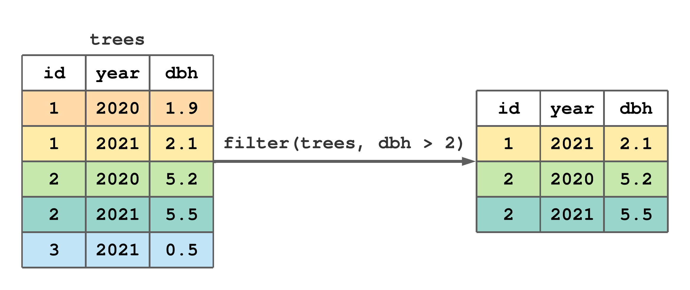
FIGURE 7.1: Using filter() to subset rows from trees with dbh greater than 2.
Next we filter mn_trees (created in Section 6.3) using several different conditions. For illustration, we simply print the filtered result, but you could assign it to a new tibble for subsequent manipulation. The call to filter() below retains only trees in stand 5.39
#> # A tibble: 3,020 × 8
#> stand_id plot_id tree_id year species age rad_inc
#> <int> <int> <int> <int> <chr> <int> <dbl>
#> 1 5 1 1 1969 ABBA 1 1.98
#> 2 5 1 1 1970 ABBA 2 2.19
#> 3 5 1 1 1971 ABBA 3 1.67
#> 4 5 1 1 1972 ABBA 4 2.34
#> 5 5 1 1 1973 ABBA 5 2.36
#> 6 5 1 1 1974 ABBA 6 2.29
#> 7 5 1 1 1975 ABBA 7 2.28
#> 8 5 1 1 1976 ABBA 8 2.46
#> 9 5 1 1 1977 ABBA 9 1.68
#> 10 5 1 1 1978 ABBA 10 2.54
#> # ℹ 3,010 more rows
#> # ℹ 1 more variable: DBH <dbl>Below, we use filter() to retain only Abies balsamea and Pinus strobus species rows (refer to Table 6.1 for species codes).
#> # A tibble: 5,936 × 8
#> stand_id plot_id tree_id year species age rad_inc
#> <int> <int> <int> <int> <chr> <int> <dbl>
#> 1 1 1 1 1960 ABBA 1 0.93
#> 2 1 1 1 1961 ABBA 2 0.95
#> 3 1 1 1 1962 ABBA 3 0.985
#> 4 1 1 1 1963 ABBA 4 0.985
#> 5 1 1 1 1964 ABBA 5 0.715
#> 6 1 1 1 1965 ABBA 6 0.84
#> 7 1 1 1 1966 ABBA 7 0.685
#> 8 1 1 1 1967 ABBA 8 0.94
#> 9 1 1 1 1968 ABBA 9 1.16
#> 10 1 1 1 1969 ABBA 10 0.775
#> # ℹ 5,926 more rows
#> # ℹ 1 more variable: DBH <dbl>The next two calls to filter() illustrate equivalent conditions that retain rows with trees older than 250 years in 2007 (i.e., the most recent date in the chronology). The second call to filter() is equivalent to the first because an implicit & is placed between conditional statements passed as separate arguments.
#> # A tibble: 2 × 8
#> stand_id plot_id tree_id year species age rad_inc
#> <int> <int> <int> <int> <chr> <int> <dbl>
#> 1 2 2 2 2007 PIRE 269 0.37
#> 2 2 2 3 2007 PIRE 265 0.26
#> # ℹ 1 more variable: DBH <dbl>#> # A tibble: 2 × 8
#> stand_id plot_id tree_id year species age rad_inc
#> <int> <int> <int> <int> <chr> <int> <dbl>
#> 1 2 2 2 2007 PIRE 269 0.37
#> 2 2 2 3 2007 PIRE 265 0.26
#> # ℹ 1 more variable: DBH <dbl>7.2 Slicing rows
slice() creates tibble row subsets given row indexes. The first argument in slice() is the tibble from which you want to subset rows and the second argument is a vector holding the desired row indexes. Figure 7.2 illustrates how slice() is used to retain rows 1 and 4 from trees.
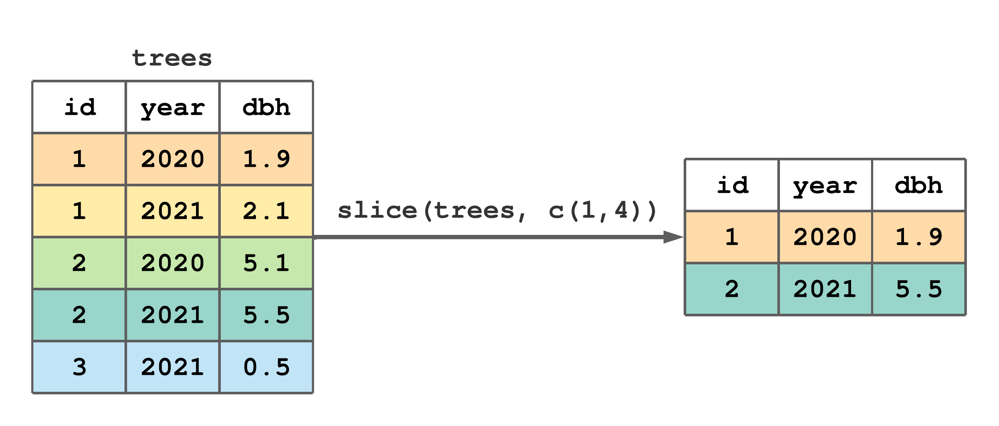
FIGURE 7.2: Using slice() to subset rows 1 and 4 of trees.
Putting a negation - operator in front of the second slice() argument produces the complement of the given row indexes. For example, following Figure 7.2, slice(trees, -c(1,4)) would retain rows 2, 3, and 5.
slice() comes in different flavors, each designed to simplify a common row subsetting task. slice_head() and slice_tail() return the first and last row of the given tibble, respectively. Similarly, slice_min() and slice_max() return the rows that hold the minimum and maximum value of a given column within the tibble. You can return a random subset of rows, with or without replacement and with specified selection probability, using slice_sample(). Change the n argument in these functions to return more than one row (i.e., the default argument is n = 1), or use the prop argument to return the desired proportion of rows. Let’s take a look at a few examples using the Minnesota tree growth dataset.
Select the first row of mn_trees.
#> # A tibble: 1 × 8
#> stand_id plot_id tree_id year species age rad_inc
#> <int> <int> <int> <int> <chr> <int> <dbl>
#> 1 1 1 1 1960 ABBA 1 0.93
#> # ℹ 1 more variable: DBH <dbl>Now, the last 2 rows.
#> # A tibble: 2 × 8
#> stand_id plot_id tree_id year species age rad_inc
#> <int> <int> <int> <int> <chr> <int> <dbl>
#> 1 5 3 23 2006 THOC 75 1.04
#> 2 5 3 23 2007 THOC 76 0.95
#> # ℹ 1 more variable: DBH <dbl>A more convoluted, but instructive, alternative to return the last two rows is slice(mn_trees, (n()-1):n()) or slice(mn_trees, c(n()-1, n())), where the dplyr function n() returns the number of rows in the given tibble. We’ll introduce this helper function more formally in Section 7.10.
Let’s find the row that holds the oldest recorded tree age, i.e., the row with the maximum age value.
#> # A tibble: 1 × 8
#> stand_id plot_id tree_id year species age rad_inc
#> <int> <int> <int> <int> <chr> <int> <dbl>
#> 1 2 2 2 2007 PIRE 269 0.37
#> # ℹ 1 more variable: DBH <dbl>You could also find this row using filter(mn_trees, age == max(age)). It’d be trickier to write a filter() statement to find, say, rows with the two greatest ages; however, such a query is easily tackled using slice_max(mn_trees, age, n = 2).
7.3 Arranging rows by values
arrange() orders rows based on values in one or more columns. The first argument in arrange() is the tibble to be ordered and subsequent arguments are the column names used to order rows. If you specify more than one column, each additional column is used to break ties in values of preceding columns. The default behavior is to sort column values in ascending order (i.e., smallest values at the top). If you want to sort column values in descending order, put the column name inside desc().
arrange() doesn’t change the number of rows, only their order. Row order doesn’t typically matter when analyzing data; however, order is often important for understanding and communicating data structure.
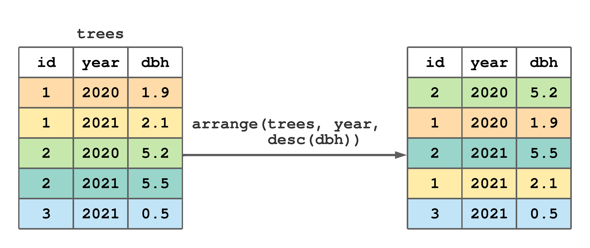
FIGURE 7.3: Using arrange() to change the row order of trees.
Figure 7.3 illustrates how to order trees by ascending year then descending dbh. Notice, there are “ties” for 2020 and 2021, hence the desc(dbh) argument causes rows within each year to be ordered by decreasing values of dbh.
The “mn_trees_subset.csv” file, that we read into mn_trees, is arranged in ascending order by stand_id, then plot_id, then tree_id, then year; hence, the code below does not change mn_trees row order.
Let’s use a subset of mn_trees to better explore arrange(). The code below filters trees in stand 1, plot 1, and year 2007. The resulting subset s1_p1 is printed then arranged in descending order by tree_id.
#> # A tibble: 7 × 8
#> stand_id plot_id tree_id year species age rad_inc
#> <int> <int> <int> <int> <chr> <int> <dbl>
#> 1 1 1 1 2007 ABBA 48 1.05
#> 2 1 1 2 2007 ABBA 63 0.49
#> 3 1 1 3 2007 BEPA 59 0.805
#> 4 1 1 4 2007 BEPA 119 0.69
#> 5 1 1 5 2007 BEPA 101 1.04
#> 6 1 1 6 2007 PIGL 54 1.7
#> 7 1 1 7 2007 PIGL 68 0.86
#> # ℹ 1 more variable: DBH <dbl>#> # A tibble: 7 × 8
#> stand_id plot_id tree_id year species age rad_inc
#> <int> <int> <int> <int> <chr> <int> <dbl>
#> 1 1 1 7 2007 PIGL 68 0.86
#> 2 1 1 6 2007 PIGL 54 1.7
#> 3 1 1 5 2007 BEPA 101 1.04
#> 4 1 1 4 2007 BEPA 119 0.69
#> 5 1 1 3 2007 BEPA 59 0.805
#> 6 1 1 2 2007 ABBA 63 0.49
#> 7 1 1 1 2007 ABBA 48 1.05
#> # ℹ 1 more variable: DBH <dbl>Now, let’s arrange s1_p1 by desc(species) and age.
#> # A tibble: 7 × 8
#> stand_id plot_id tree_id year species age rad_inc
#> <int> <int> <int> <int> <chr> <int> <dbl>
#> 1 1 1 6 2007 PIGL 54 1.7
#> 2 1 1 7 2007 PIGL 68 0.86
#> 3 1 1 3 2007 BEPA 59 0.805
#> 4 1 1 5 2007 BEPA 101 1.04
#> 5 1 1 4 2007 BEPA 119 0.69
#> 6 1 1 1 2007 ABBA 48 1.05
#> 7 1 1 2 2007 ABBA 63 0.49
#> # ℹ 1 more variable: DBH <dbl>Notice, rows are ordered by the character column species in descending alphabetical order, then by ascending age within each species.
7.4 Selecting columns
Another common task is to select a subset of columns in the dataset. This is accomplished using select(). The first argument in select() is the tibble (or data frame) from which you want to subset columns, followed by additional arguments used to identify columns you want to retain.
Figure 7.4 offers a minimal select() example that lists column names to retain as separate arguments.
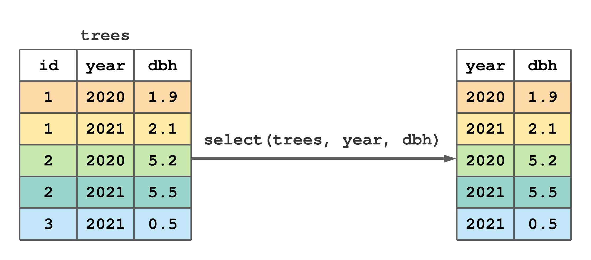
FIGURE 7.4: Using select() to subset columns from trees.
Consider how the next four calls to select() specify columns to retain. In particular notice that:
- columns can be selected by name or column index;
- column names or indexes can be specified in separate arguments, or passed all at once as a vector formed using
c(); - the colon
:operator can be used to specify consecutive column indexes; - the negation operator
!returns the column set complement.
#> # A tibble: 11,649 × 2
#> year DBH
#> <int> <dbl>
#> 1 1960 2.16
#> 2 1961 2.35
#> 3 1962 2.54
#> 4 1963 2.74
#> 5 1964 2.88
#> 6 1965 3.05
#> 7 1966 3.19
#> 8 1967 3.38
#> 9 1968 3.61
#> 10 1969 3.76
#> # ℹ 11,639 more rows#> # A tibble: 11,649 × 6
#> stand_id plot_id tree_id species age rad_inc
#> <int> <int> <int> <chr> <int> <dbl>
#> 1 1 1 1 ABBA 1 0.93
#> 2 1 1 1 ABBA 2 0.95
#> 3 1 1 1 ABBA 3 0.985
#> 4 1 1 1 ABBA 4 0.985
#> 5 1 1 1 ABBA 5 0.715
#> 6 1 1 1 ABBA 6 0.84
#> 7 1 1 1 ABBA 7 0.685
#> 8 1 1 1 ABBA 8 0.94
#> 9 1 1 1 ABBA 9 1.16
#> 10 1 1 1 ABBA 10 0.775
#> # ℹ 11,639 more rows#> # A tibble: 11,649 × 5
#> stand_id plot_id tree_id year age
#> <int> <int> <int> <int> <int>
#> 1 1 1 1 1960 1
#> 2 1 1 1 1961 2
#> 3 1 1 1 1962 3
#> 4 1 1 1 1963 4
#> 5 1 1 1 1964 5
#> 6 1 1 1 1965 6
#> 7 1 1 1 1966 7
#> 8 1 1 1 1967 8
#> 9 1 1 1 1968 9
#> 10 1 1 1 1969 10
#> # ℹ 11,639 more rows#> # A tibble: 11,649 × 5
#> plot_id species age rad_inc DBH
#> <int> <chr> <int> <dbl> <dbl>
#> 1 1 ABBA 1 0.93 2.16
#> 2 1 ABBA 2 0.95 2.35
#> 3 1 ABBA 3 0.985 2.54
#> 4 1 ABBA 4 0.985 2.74
#> 5 1 ABBA 5 0.715 2.88
#> 6 1 ABBA 6 0.84 3.05
#> 7 1 ABBA 7 0.685 3.19
#> 8 1 ABBA 8 0.94 3.38
#> 9 1 ABBA 9 1.16 3.61
#> 10 1 ABBA 10 0.775 3.76
#> # ℹ 11,639 more rowsA set of helper functions aid in column selection. The next bit of code uses the ends_with() helper function to select all columns with name’s ending with “id”.
#> # A tibble: 11,649 × 3
#> stand_id plot_id tree_id
#> <int> <int> <int>
#> 1 1 1 1
#> 2 1 1 1
#> 3 1 1 1
#> 4 1 1 1
#> 5 1 1 1
#> 6 1 1 1
#> 7 1 1 1
#> 8 1 1 1
#> 9 1 1 1
#> 10 1 1 1
#> # ℹ 11,639 more rowsOther handy helper functions you should investigate are everything(), last_col(), starts_with(), contains(), matches(), num_range(), all_of(), and where(). See ?dplyr::select for details.
The & and | operators provide additional flexibility for specifying columns to retain or exclude. Use & to identify the intersection between two column sets (i.e., those columns that are in both sets). Use | to identify the union of two column sets (i.e., all columns in at least one set). For example, the code below returns the tree_id column because it’s selected by both ends_with("id") and contains("tree").
#> # A tibble: 11,649 × 1
#> tree_id
#> <int>
#> 1 1
#> 2 1
#> 3 1
#> 4 1
#> 5 1
#> 6 1
#> 7 1
#> 8 1
#> 9 1
#> 10 1
#> # ℹ 11,639 more rowswhere() is a bit different from other helper functions listed above. Use where() when you want to apply a function to all columns and select those for which the discerning function returns TRUE. The data type testing functions introduced in Section 4, e.g., is.numeric(), is.integer(), is.double(), is.factor(), is.character(), can be used with where(). For example, run select(mn_trees, where(is.character)) to select only character data type columns, select(mn_trees, where(is.numeric)) to select all numeric columns.
How about selecting all columns of type integer that don’t end in “id”? One approach is select(mn_trees, where(is.integer) & !ends_with("id")).
As you’ll see shortly, other dplyr functions use select() syntax to identify columns.
7.5 Renaming columns
It’s easy to rename tibble columns using rename(). As illustrated in Figure 7.5, the first argument in rename() is the tibble containing columns to rename and subsequent arguments takes the form new_name = old_name, where old_name is the existing column name and new_name is the name you’d like to change it to.
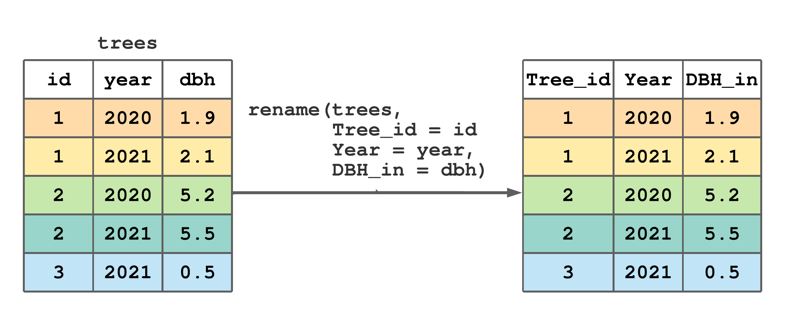
FIGURE 7.5: Using rename() to rename some column names in trees.
Let’s change column names rad_inc and DBH in mn_trees to rad_inc_mm and DBH_cm, so we don’t need to keep looking back at Section 6.1 to remember their units. Notice in the code below, we assign the output of rename() back to mn_trees to make the name change permanent. Taking a glimpse() at mn_trees shows the column names are indeed modified.
#> Rows: 11,649
#> Columns: 8
#> $ stand_id <int> 1, 1, 1, 1, 1, 1, 1, 1, 1, 1, 1, 1…
#> $ plot_id <int> 1, 1, 1, 1, 1, 1, 1, 1, 1, 1, 1, 1…
#> $ tree_id <int> 1, 1, 1, 1, 1, 1, 1, 1, 1, 1, 1, 1…
#> $ year <int> 1960, 1961, 1962, 1963, 1964, 1965…
#> $ species <chr> "ABBA", "ABBA", "ABBA", "ABBA", "A…
#> $ age <int> 1, 2, 3, 4, 5, 6, 7, 8, 9, 10, 11,…
#> $ rad_inc_mm <dbl> 0.930, 0.950, 0.985, 0.985, 0.715,…
#> $ DBH_cm <dbl> 2.1563, 2.3463, 2.5433, 2.7403, 2.…rename_with() provides batch selection and function-based renaming. The first rename_with() argument is the name of the tibble containing columns to rename, the second argument is a function that takes a character string and returns a modified string (i.e., takes the old name and returns the new name), the optional third argument specifies the columns to rename. The third argument uses select() syntax to select columns, see Section 7.4 and the example below. If the third argument is not used, the function in the second argument is applied to all columns.
Let’s use the tidyverse stringr package’s str_to_title() function to change only those columns that end with id to title case (i.e., capitalize the first letter). As the name suggests, the stringr package provides functions that work on character strings, see, e.g., ?stringr::stringr.
#> # A tibble: 11,649 × 8
#> Stand_id Plot_id Tree_id year species age
#> <int> <int> <int> <int> <chr> <int>
#> 1 1 1 1 1960 ABBA 1
#> 2 1 1 1 1961 ABBA 2
#> 3 1 1 1 1962 ABBA 3
#> 4 1 1 1 1963 ABBA 4
#> 5 1 1 1 1964 ABBA 5
#> 6 1 1 1 1965 ABBA 6
#> 7 1 1 1 1966 ABBA 7
#> 8 1 1 1 1967 ABBA 8
#> 9 1 1 1 1968 ABBA 9
#> 10 1 1 1 1969 ABBA 10
#> # ℹ 11,639 more rows
#> # ℹ 2 more variables: rad_inc_mm <dbl>, DBH_cm <dbl>See ?dplyr::rename_with for additional guidance and syntax to develop and apply more sophisticated renaming functions.
7.6 Creating new columns
mutate() creates new columns and adds them to the right side of an existing tibble. The first argument in mutate() is the tibble to be augmented and subsequent arguments define the new columns. This function is particularly useful because exiting columns in the tibble can be referenced when defining new columns. This feature is illustrated in Figure 7.6 using the existing dbh column to create a basal area (ba) column.
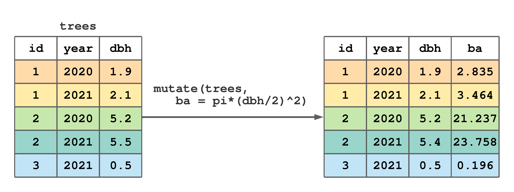
FIGURE 7.6: Using mutate() to add a basal area (ba) column to trees.
Sometimes, we want a tibble that includes only newly created columns, or a combination of original and new columns. In this case we use transmute(). For example, as illustrated in Figure 7.7, say we want to make ba using dbh in trees, but this time we want the new tibble to include only the columns id, year, and ba (i.e., we don’t want to retain dbh). Also notice in Figure 7.7, we can carryover columns unchanged by just listing their names in transmute arguments.40
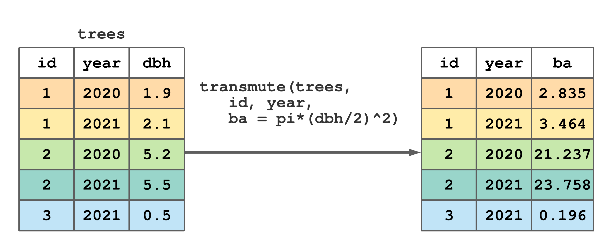
FIGURE 7.7: Using transmute() to create basal area (ba) and keep tree and year columns.
Let’s use mutate() to add a basal area column to mn_trees. Given DBH in cm, we calculate BA (m\(^2\)) = \(0.00007854\cdot \text{DBH}^2\), which is implemented in the code below to create BA_m_sq.
#> Rows: 11,649
#> Columns: 9
#> $ stand_id <int> 1, 1, 1, 1, 1, 1, 1, 1, 1, 1, 1, 1…
#> $ plot_id <int> 1, 1, 1, 1, 1, 1, 1, 1, 1, 1, 1, 1…
#> $ tree_id <int> 1, 1, 1, 1, 1, 1, 1, 1, 1, 1, 1, 1…
#> $ year <int> 1960, 1961, 1962, 1963, 1964, 1965…
#> $ species <chr> "ABBA", "ABBA", "ABBA", "ABBA", "A…
#> $ age <int> 1, 2, 3, 4, 5, 6, 7, 8, 9, 10, 11,…
#> $ rad_inc_mm <dbl> 0.930, 0.950, 0.985, 0.985, 0.715,…
#> $ DBH_cm <dbl> 2.1563, 2.3463, 2.5433, 2.7403, 2.…
#> $ BA_m_sq <dbl> 0.00036518, 0.00043237, 0.00050802…The glimpse() above shows BA_m_sq is now the last mn_trees column, which is the default placement for columns created using mutate() and transmute(). Take a look at mutate() and transmute() optional .before and .after arguments that allow you to override this default and control column placement. If you feel sad for BA_m_sq—being in the last column and all—then check out relocate() in the next section, which also allows you to change column order for an existing tibble.
Often the values we assign to a new column using mutate() are conditional on the values in one or more existing columns. For example, say we want to add a species column to trees and we know tree id 1 is Larix laricina, id 2 is Picea glauca, and id 3 is Populus tremuloides. So, how do we go about creating such a column?
One approach is to use the dplyr’s if_else() function, which is defined as if_else(condition, true, false, missing = NULL), where condition is a logical vector created using one or more vectors and logical operators in Section 4.7, true is the value to use if the condition is TRUE, false is the value to use if the condition is FALSE, and missing is the value to use if the condition is neither TRUE nor FALSE, e.g., NA. One important point about dplyr’s if_else() function is the values given in the true and false arguments must be of the same type (see data types in Section 4.2.1 and ?dplyr::if_else for more details). If this requirement annoys you, then consider base R’s less strict ifelse() function that will coerce argument values to the same type (see ?base::ifelse).
While if_else() is a standalone function (meaning it can be used on its own to create a vector), we often use it in mutate() and/or other functions where vectors are created or values changed.
Let’s begin by using if_else() within mutate() to create a species column and populate id == 1 rows with “Larix laricina” and, for demonstration, all other rows with NA.41
#> # A tibble: 5 × 4
#> id year dbh species
#> <int> <int> <dbl> <chr>
#> 1 1 2020 1.9 Larix laricina
#> 2 1 2021 2.1 Larix laricina
#> 3 2 2020 5.2 <NA>
#> 4 2 2021 5.5 <NA>
#> 5 3 2021 0.5 <NA>All rows in the species column can be filled in as follows.
mutate(trees,
species = if_else(id == 1, "Larix laricina", NA),
species = if_else(id == 2, "Picea glauca", species),
species = if_else(id == 3, "Populus tremuloides", species)
)#> # A tibble: 5 × 4
#> id year dbh species
#> <int> <int> <dbl> <chr>
#> 1 1 2020 1.9 Larix laricina
#> 2 1 2021 2.1 Larix laricina
#> 3 2 2020 5.2 Picea glauca
#> 4 2 2021 5.5 Picea glauca
#> 5 3 2021 0.5 Populus tremuloidesNotice above species rows are incrementally filled, first for id 1, then 2, and then 3. Alternatively, you can use nested conditional statements, where the false argument holds another if_else().
mutate(trees,
species = if_else(id == 1,
"Larix laricina",
if_else(id == 2,
"Picea glauca",
if_else(id == 3,
"Populus tremuloides", NA)
)
)
)#> # A tibble: 5 × 4
#> id year dbh species
#> <int> <int> <dbl> <chr>
#> 1 1 2020 1.9 Larix laricina
#> 2 1 2021 2.1 Larix laricina
#> 3 2 2020 5.2 Picea glauca
#> 4 2 2021 5.5 Picea glauca
#> 5 3 2021 0.5 Populus tremuloidesif_else() is a powerful tool in some situations, particularly when we need to test only one condition. However, as illustrated above, coding can be onerous when we need to test multiple conditions.
The alternative to writing multiple nested if_else() statements, is case_when() (see ?dplyr::case_when). Like if_else(), case_when() is a standalone function but is often used in mutate() to create or modify columns. case_when() takes one or more arguments, where each argument, or case, is a two-sided formula where the left side is separated by the right side by a tilde symbol ~. The left side is a logical vector created using one or more vectors and logical operators in Section 4.7. The right side is the value to use when the left side is TRUE. If no cases are TRUE (i.e., none of the arguments’ left sides are TRUE) then a NA is returned. Like, if_else(), case_when() requires values on the left side of cases to be the same type.
mutate(trees, species = case_when(
id == 1 ~ "Larix laricina",
id == 2 ~ "Picea glauca",
id == 3 ~ "Populus tremuloides"
)
)#> # A tibble: 5 × 4
#> id year dbh species
#> <int> <int> <dbl> <chr>
#> 1 1 2020 1.9 Larix laricina
#> 2 1 2021 2.1 Larix laricina
#> 3 2 2020 5.2 Picea glauca
#> 4 2 2021 5.5 Picea glauca
#> 5 3 2021 0.5 Populus tremuloidesAs one final example, let’s add a diameter class column to mn_trees. We’ll use transmute() to return only DBH_cm and our new DBH_class columns. Diameter class criteria and associated naming are given on the left and right side, respectively, within case_when().
transmute(mn_trees, DBH_cm,
DBH_class = case_when(
DBH_cm < 2.5 ~ "seedling",
DBH_cm >= 2.5 & DBH_cm < 5 ~ "small sapling",
DBH_cm >= 5 & DBH_cm < 10 ~ "large sapling",
DBH_cm >= 10 & DBH_cm < 20 ~ "small pole",
DBH_cm >= 20 & DBH_cm < 30 ~ "large pole",
DBH_cm >= 30 & DBH_cm < 50 ~ "small sawlog",
DBH_cm >= 50 ~ "large sawlog"
)
)#> # A tibble: 11,649 × 2
#> DBH_cm DBH_class
#> <dbl> <chr>
#> 1 2.16 seedling
#> 2 2.35 seedling
#> 3 2.54 small sapling
#> 4 2.74 small sapling
#> 5 2.88 small sapling
#> 6 3.05 small sapling
#> 7 3.19 small sapling
#> 8 3.38 small sapling
#> 9 3.61 small sapling
#> 10 3.76 small sapling
#> # ℹ 11,639 more rows7.7 Change column order
Change column position within a tibble using relocate(). The first argument in relocate() is the tibble to be modified and subsequent arguments identify columns. Columns are identified using select() syntax, see Section 7.4. By default, selected columns are moved to the tibble’s left side, as illustrated in Figure 7.8.
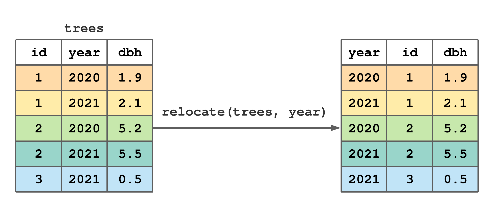
FIGURE 7.8: Use the default behavior of relocate() to move year to the left side of trees.
Use the .before or .after arguments to control column location, i.e., if you want the selected columns to be moved to “before” or “after” one or more specified columns. select() syntax is used when specifying columns for .before and .after arguments. You can also rename columns in the process of moving them as illustrated in Figure 7.9.
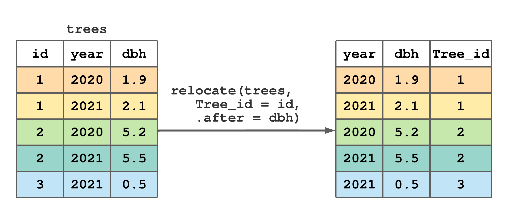
FIGURE 7.9: Use relocate() to rename and move id to after dbh.
Let’s now return to the mn_trees dataset to work a bit more with relocate(). For fun, we move stand_id, plot_id, tree_id and year from their original location in the first four columns, to the right side of the last column. Notice how the select() helper functions contains(), |, and last_col() are used in relocate().42
#> # A tibble: 11,649 × 9
#> species age rad_inc_mm DBH_cm BA_m_sq stand_id
#> <chr> <int> <dbl> <dbl> <dbl> <int>
#> 1 ABBA 1 0.93 2.16 0.000365 1
#> 2 ABBA 2 0.95 2.35 0.000432 1
#> 3 ABBA 3 0.985 2.54 0.000508 1
#> 4 ABBA 4 0.985 2.74 0.000590 1
#> 5 ABBA 5 0.715 2.88 0.000653 1
#> 6 ABBA 6 0.84 3.05 0.000731 1
#> 7 ABBA 7 0.685 3.19 0.000798 1
#> 8 ABBA 8 0.94 3.38 0.000895 1
#> 9 ABBA 9 1.16 3.61 0.00102 1
#> 10 ABBA 10 0.775 3.76 0.00111 1
#> # ℹ 11,639 more rows
#> # ℹ 3 more variables: plot_id <int>, tree_id <int>,
#> # year <int>Like row order, column order rarely matters for analysis; however, it’s often important for recognizing and communicating data structure. We generally like to have those columns that describe observation nesting structure to be to the left of observation measurements. For the mn_trees dataset, this means stand_id, plot_id, tree_id, and year come before (i.e., to the left of) species, age, and tree-ring measurement variables—the way these data are organized in the “mn_trees_subset.csv” file.
7.8 Summarizing
summarize() collapses a tibble to a single row. We often use summarize() to compute summary statistics for one or more columns in a tibble. The first argument in summarize() is the tibble and subsequent arguments define how rows should be collapsed, i.e., summarized. For example, Figure 7.10 illustrates a call to summarize() that computes the dbh column’s mean and standard deviation.
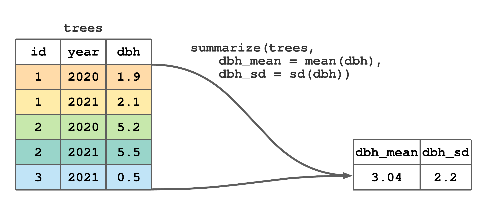
FIGURE 7.10: Use summarize() to compute the mean and standard deviation of dbh.
Returning for a moment to material in Chapter 4, the call to summarize() in Figure 7.10 is equivalent to the code below.
#> # A tibble: 1 × 2
#> dbh_mean dbh_sd
#> <dbl> <dbl>
#> 1 3.04 2.20For our purposes, summarize() is most useful when applied to grouped data, which is introduced in the next section.
7.9 Grouped data
Many datasets we encounter have a nested structure (e.g., measurements on trees within plots, plots within stands, stands within a forest) and/or populations of interest (e.g., species, geographic region, product type). When dataset rows correspond to observational units and columns correspond to variables, observation placement within nested levels or population membership is defined by values in one or more discrete, nominal, or ordinal variables (Figure 10.1). In this way, observations (i.e., rows) can be grouped by common nesting and/or population values. group_by() adds such row grouping information to a tibble and returns a grouped tibble.
The first argument in group_by() is the tibble to group and subsequent arguments identify the columns, or combination of columns, that define row membership to groups. As we’ll see, some dplyr verb functions behave differently when passed grouped data.
Let’s return to the non-stylized trees data created in Section 6.2. The code below groups trees by id, assigns the result to trees_by_id, then prints trees_by_id. The second printed line, Groups: id [3], tells us this is a grouped tibble, groups are defined by values in the id column, and there are 3 groups.43
#> # A tibble: 5 × 3
#> # Groups: id [3]
#> id year dbh
#> <int> <int> <dbl>
#> 1 1 2020 1.9
#> 2 1 2021 2.1
#> 3 2 2020 5.2
#> 4 2 2021 5.5
#> 5 3 2021 0.5Multiple columns can be used to specify the grouping structure. The code below groups first by id then year with the result being 5 groups (i.e., 5 groups because every row in trees has a unique combination of id and year values).
#> # A tibble: 5 × 3
#> # Groups: id, year [5]
#> id year dbh
#> <int> <int> <dbl>
#> 1 1 2020 1.9
#> 2 1 2021 2.1
#> 3 2 2020 5.2
#> 4 2 2021 5.5
#> 5 3 2021 0.5Additional grouping variables can be added to an already grouped tibble by setting the group_by() argument .add to TRUE. For example, group_by(trees_by_id, year, .add = TRUE) is equivalent to group_by(trees, id, year).
If you want to know the grouping columns, but don’t want all the other information provided by print() or glimps(), call group_vars() on the grouped tibble. See ?dplyr::group_data for other functions used to extract group information.
We often want to remove or change a tibble’s grouping structure. Use ungroup() to remove grouping information, i.e., make grouped data ungrouped. For example, remove all group information with ungroup(trees_by_id_year), or remove individual grouping columns by passing them as subsequent arguments as illustrated below.
#> # A tibble: 5 × 3
#> # Groups: year [2]
#> id year dbh
#> <int> <int> <dbl>
#> 1 1 2020 1.9
#> 2 1 2021 2.1
#> 3 2 2020 5.2
#> 4 2 2021 5.5
#> 5 3 2021 0.5So how do dplyr functions behave given a grouped tibble? We’ll cover the various functions in order of their initial presentation and, hence, start with functions that operate on tibble rows (i.e., filter(), slice() and arrange()).
If filter() is passed a grouped tibble and the filtering condition uses a summary function or group characteristic (e.g., number of rows computed using the n(), see Section 7.10), the result will be group specific. For example, the code below selects each tree’s largest DBH measurement row. Here, filter() recognizes trees_by_id is grouped by id and hence applies the summary function max(dbh) and condition dbh == max(dbh) separately using each tree’s dbh values. Given there are three groups, the result comprises three rows each holding a group-specific result.
#> # A tibble: 3 × 3
#> # Groups: id [3]
#> id year dbh
#> <int> <int> <dbl>
#> 1 1 2021 2.1
#> 2 2 2021 5.5
#> 3 3 2021 0.5Figure 7.11 is a stylized take on the code and output above, and useful for highlighting how dbh == max(dbh) is applied separately to each group of rows.
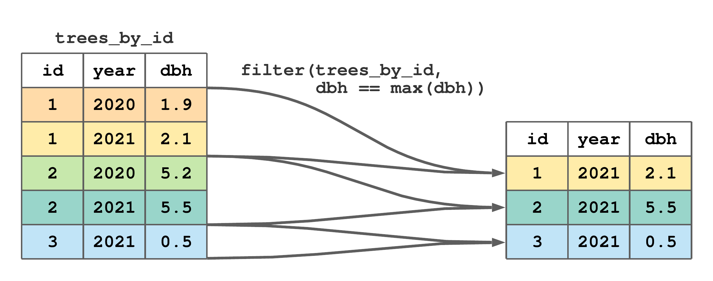
FIGURE 7.11: Using grouped filter() to subset rows with the maximum dbh by tree id from trees.
Next, let’s consider a grouped filter() that uses a group characteristic in the filtering condition. Say we want all trees that only have one measurement. Recall, each row in trees represents a measurement and the n() function returns the number of rows, so n() applied to the grouped trees_by_id will return the number of measurements for each tree. This logic is used in the code below to return our desired result.
#> # A tibble: 1 × 3
#> # Groups: id [1]
#> id year dbh
#> <int> <int> <dbl>
#> 1 3 2021 0.5Similarly, slice() and its various flavors slice_head(), slice_tail(), slice_min(), slice_max(), and slice_sample() subset rows within each group. For example, the code below, returns the row with the minimum year for each tree.
#> # A tibble: 3 × 3
#> # Groups: id [3]
#> id year dbh
#> <int> <int> <dbl>
#> 1 1 2020 1.9
#> 2 2 2020 5.2
#> 3 3 2021 0.5Passing grouped and ungrouped data to arrange() gives the same result, unless you set the function’s optional argument .by_group to TRUE, in which case it will order first by the grouping.
Recall, the functions select(), rename(), mutate(), transmute(), and relocate() operate on tibble columns. Because rename() and relocate() only affect the column name and position, their behavior is the same given grouped or ungrouped data. Similarly, a grouped select() is the same as an ungrouped select(), except grouping columns are always included in the resulting column subset.
Similar to a grouped filter(), a grouped mutate(), or grouped transmute(), has different behavior if your new column definition uses a summary function or some other group specific characteristic. For example, the code below adds a new column to trees called max_dbh that holds the maximum DBH recorded for each tree.
#> # A tibble: 5 × 4
#> # Groups: id [3]
#> id year dbh max_dbh
#> <int> <int> <dbl> <dbl>
#> 1 1 2020 1.9 2.1
#> 2 1 2021 2.1 2.1
#> 3 2 2020 5.2 5.5
#> 4 2 2021 5.5 5.5
#> 5 3 2021 0.5 0.5Notice the call to mutate() above uses the grouped trees_by_id tibble, hence the summary function max(dbh) returns the maximum DBH found among each tree’s measurements and recycles that value to match the number of rows in the given group. Breaking this down a bit more, for tree id 1 the maximum dbh is 2.1, i.e., max(c(1.9, 2.1)), hence 2.1 is repeated for the first two rows of max_dbh. The max_dbh values for id 2 and 3 follow the same logic.
Let’s consider a slightly more involved example. Say we want to add an annual DBH increment (dbh_inc) column to trees. Given dbh is the tree’s diameter at the end of a growing season, dbh_inc is the difference between a tree’s current and previous year DBH measurements, computed as follows.
#> # A tibble: 5 × 4
#> # Groups: id [3]
#> id year dbh dbh_inc
#> <int> <int> <dbl> <dbl>
#> 1 1 2020 1.9 NA
#> 2 1 2021 2.1 0.200
#> 3 2 2020 5.2 NA
#> 4 2 2021 5.5 0.300
#> 5 3 2021 0.5 NABecause we pass the grouped trees_by_id to mutate() above, the lag() (see ?dplyr::lag) function is applied to each tree’s dbh vector. Specifically, for tree id 1, the first two values in the dbh_inc column equal c(1.9, 2.1) - lag(c(1.9, 2.1)). If it’s not immediately apparent how lag() works or why NAs appear in the dbh_inc column, spend a little time reading the lag() manual page and work some simple examples, e.g., run lag(c(1.9, 2.1)).
As mentioned at the end of Section 7.8, summarize() is most useful when applied to grouped data. As illustrated in Figure 7.12, given a grouped tibble, column summaries defined in summarize() are applied separately to each group of rows. It’s useful to compare Figures 7.12 and 7.10, and note the only difference is the code in Figure 7.12 is passed the grouped trees_by_id tibble. Again, it might be instructive to break down the steps leading to the output in Figure 7.12. For example, the mean and standard deviation values for tree id 1 are mean(c(1.9, 2.1)) and sd(c(1.9, 2.1)), respectively.44 Check your understanding about the grouped summarize() and computing the standard deviation by figuring out why the NA appears in the last row of dbh_sd.
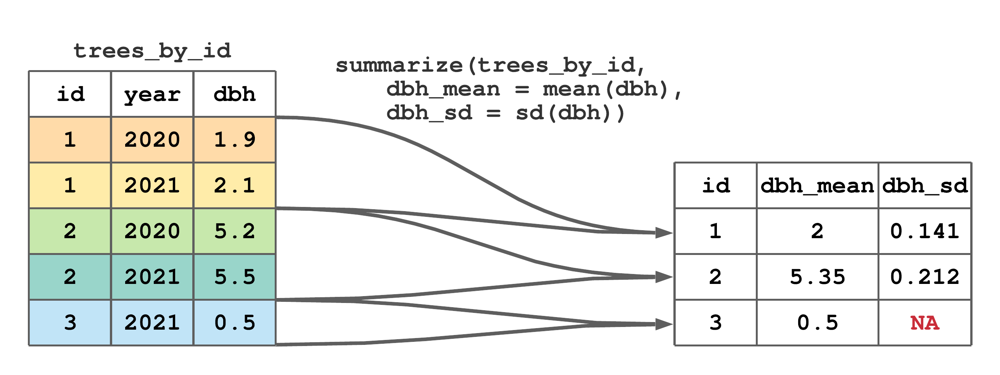
FIGURE 7.12: Use summarize() to compute tree specific mean and standard deviation of dbh.
Each time you apply summarize() to a grouped tibble, the default behavior is to remove the last grouping level (i.e., the right most group specified by group_by() and shown in print(), glimpse() or group_vars()). The optional summarize() argument .groups, which is by default set to "drop_last", controls if and how the output tibble is grouped. In most cases this default behavior is sensible, because the output of summarize() is a summary of rows defined by the last grouping variable. However, when there are multiple grouping columns, you might want the output of summarize() to be ungrouped, which is accomplished by overriding the default behavior using .groups = "drop" or by passing the grouped summarize() output to the ungroup() function. We’ll return to these very important points in Section 7.13 and Chapter 12.5 when working with tibbles grouped by multiple columns.
A key dplyr strength is its ability to work with grouped data. For example, the grouped summarize() is so handy that it appears in nearly all subsequent estimation problems in Chapter 12 and beyond.
7.10 Counting
We often need to know the number of rows, perhaps by group, within a dataset. Rows are counted using the n() helper function, which is a context dependent function used within dplyr verb functions. It takes no arguments and returns the context specific group size. We see n() used most often in summarize() and mutate() to count rows in groups. Here are two examples that use the grouped trees_by_id tibble. The first uses n() in summarize() to count measurements for each tree id (i.e., rows of each id value).
#> # A tibble: 3 × 2
#> id n_measurement
#> <int> <int>
#> 1 1 2
#> 2 2 2
#> 3 3 1Next, n() is used in mutate() to add a column containing the number of measurements for each tree id.
#> # A tibble: 5 × 4
#> # Groups: id [3]
#> id year dbh n_measurement
#> <int> <int> <dbl> <int>
#> 1 1 2020 1.9 2
#> 2 1 2021 2.1 2
#> 3 2 2020 5.2 2
#> 4 2 2021 5.5 2
#> 5 3 2021 0.5 1The number of distinct values in a discrete variable is also often of interest (e.g., number of distinct plot numbers or species). n_distinct() returns the number of unique values in one or more vectors, see ?dplyr::n_distinct for details. Like n(), when applied to a grouped tibble within a verb function, n_distinct() returns the number of group specific distinct values for the one or more columns provided as arguments. If more than one column is provided, then n_distinct() returns the number of distinct row combinations. For example, let’s first count the number of unique measurement years within the ungrouped trees tibble.
#> # A tibble: 1 × 1
#> n_years
#> <int>
#> 1 2The only two measurement years are 2020 and 2021, hence n_years is 2 in the output above.
Now, how about the number of unique measurement years for each tree (i.e., using the grouped trees_by_id tibble)?
#> # A tibble: 3 × 2
#> id n_years
#> <int> <int>
#> 1 1 2
#> 2 2 2
#> 3 3 1Each row in the output above corresponds to an id and n_years holds the number of distinct years, i.e., 2020 and 2021 for id 1 and 2, and 2021 for id 3.
We’ll get some more practice using n() and n_distinct() in Section 7.13.
7.11 Applying a function across columns
There’s often a need to apply one or more functions to a set of columns in a tibble, which is accomplished using dplyr::across(). across() has two primary arguments. The first, .cols, uses select() syntax (see Section 7.4) to select columns to which a function(s) will be applied. The second, .fns, is a function or list of functions to apply to selected columns. While across() can be used in several dplyr functions, we use it most often in mutate() and summarize().
To motivate some across() examples, let’s add a tree height (ft) column to the trees tibble.
#> # A tibble: 5 × 4
#> id year dbh height
#> <int> <int> <dbl> <dbl>
#> 1 1 2020 1.9 23
#> 2 1 2021 2.1 24.9
#> 3 2 2020 5.2 47
#> 4 2 2021 5.5 48.5
#> 5 3 2021 0.5 8.8Now, say we want to round dbh and height to whole numbers. One option is to apply the round() function to each column individually within mutate(), i.e., mutate(trees, dbh = round(dbh), height = round(height)). This works well, but it could get tedious if there are more than a few columns to round. The alternative is to use across() within mutate(), which is applied in the code below.45
#> # A tibble: 5 × 4
#> id year dbh height
#> <int> <int> <dbl> <dbl>
#> 1 1 2020 2 23
#> 2 1 2021 2 25
#> 3 2 2020 5 47
#> 4 2 2021 6 48
#> 5 3 2021 0 9Say you want to apply a function to all columns of a certain data type. In such cases, the select() syntax where() function (see Section 7.4) is useful, e.g., mutate(trees, across(.cols = where(is.double), .fns = round)).
If you want to specify non-default arguments in a function passed to .fns, or you’d like the columns defined in .cols to be passed to something other than the first argument in a .fns function, then you need to use an anonymous function. An anonymous function is just a function without a name. Continuing with the rounding example, say we want to round the dbh and height columns to one digit (the default of round() is digits = 0). This is accomplished using an anonymous function as follows.
#> # A tibble: 5 × 4
#> id year dbh height
#> <int> <int> <dbl> <dbl>
#> 1 1 2020 1.9 23
#> 2 1 2021 2.1 24.9
#> 3 2 2020 5.2 47
#> 4 2 2021 5.5 48.5
#> 5 3 2021 0.5 8.8The anonymous function function(x) round(x, digits = 1) calls round(x, digits = 1) with x set as a placeholder for dbh and height.
A less verbose alternative to anonymous function syntax is to use the tidyverse purrr package’s lambda syntax.46 Following the example above, we can replace the anonymous function function(x) round(x, digits = 1) with equivalent lambda syntax ~ round(.x, digits = 1) where the tilde ~ says we’re providing a function with .x set as a placeholder for columns given in .cols.
Let’s use across() within summarize() to compute the mean for dbh and height using base R’s mean() function, first using an anonymous function then using the equivalent lambda syntax.
#> # A tibble: 1 × 2
#> dbh height
#> <dbl> <dbl>
#> 1 3.04 30.4#> # A tibble: 1 × 2
#> dbh height
#> <dbl> <dbl>
#> 1 3.04 30.4Now, let’s compute the mean and standard deviation for dbh and height by passing a list of lambda syntax calls to the mean() and sd() functions to .fns.
summarize(trees, across(.cols = c(dbh, height),
.fns = list(~ mean(.x, na.rm = FALSE),
~ sd(.x, na.rm = FALSE))))#> # A tibble: 1 × 4
#> dbh_1 dbh_2 height_1 height_2
#> <dbl> <dbl> <dbl> <dbl>
#> 1 3.04 2.20 30.4 17.0In the output above, the numbers appended to column names, i.e., _1 and _2, correspond to function list element indexes. We can explicitly label output columns by passing a function list with element names to .fns as illustrated below.
summarize(trees, across(.cols = c(dbh, height),
.fns = list(the_mean = ~ mean(.x, na.rm = FALSE),
the_sd = ~ sd(.x, na.rm = FALSE))),
)#> # A tibble: 1 × 4
#> dbh_the_mean dbh_the_sd height_the_mean height_the_sd
#> <dbl> <dbl> <dbl> <dbl>
#> 1 3.04 2.20 30.4 17.0Use the .names argument in across() for finer control over column names, see ?dplyr::across for details.
See the end of Section 12.5 for a more extensive across() within summarize() example. Also, there’s an across() vignette, accessed by running vignette("colwise") on the console, that provides extensive illustrations and details.
7.12 Piping
You might have noticed that .data is the first argument for all dplyr verb functions. This is an intentional design feature that, when combined with the tidyverse magrittr package pipe operator %>%, facilitates efficient and intuitive workflows. The pipe operator is available automatically when dplyr or other tidyverse packages are loaded.47
The pipe operator places the object on its left into a function on its right. By default, the operator places the object in the function’s first argument. Here’s an initial non-dplyr example that pipes the vector x into the max() function.
#> [1] 5The pipe operator implicitly adds the object to the function’s argument list (i.e., the object is added to the function’s argument list, but you just don’t see it). Additional function arguments follow the implicit argument. For example, let’s redefine x to include an NA then add the optional na.rm argument to max().
#> [1] 5To appreciate the beauty of using pipes with dplyr, consider the following example. Returning to the trees data, say we want to keep only tree id 1 measurements, remove the height column that was recently added in Section 7.11, and sort rows by year in descending order. One possible approach to this three-step process is to create intermediate tibbles as illustrated below.
If you plan to use these intermediate tibbles for something else and they can be meaningfully named, then perhaps this approach is a good one. However, if the intermediate tibbles are just a means to an end, then there are two good reasons this approach should be avoided. First, the environment and code becomes cluttered with unimportant objects, e.g., tbl.1 and tbl.2. Second, if you’re like us, you’ll inevitably make an error incrementing tibble number suffixes or inputting the wrong tibble in a subsequent function.
You could do away with the intermediate tibbles by simply overwriting a tibble name.
This too is a less than desirable approach. It’s difficult to debug, because you’ll need to re-run all lines each time you make a change to the code. Also, it’s hard to follow how tbl is modified by each line.
Another approach is to nest the calls to filter(), select(), and arrange().
The downside of this approach is that it’s challenging to write and even harder to read.
Using pipes is the preferred solution to move the result of one verb function to the next.
Notice, when written using pipes, the code reads like an action-packed sentence. In your mind, replace the pipe operator %>% with “then” to say “take the trees tibble then filter then select then arrange.”
Let’s try another piped operation using trees. Recall back in Section 7.9 we selected each tree’s first measurement year using slice_min(trees_by_id, year), where trees_by_id is trees grouped by id. Here’s that same query performed using pipes.
#> # A tibble: 3 × 4
#> # Groups: id [3]
#> id year dbh height
#> <int> <int> <dbl> <dbl>
#> 1 1 2020 1.9 23
#> 2 2 2020 5.2 47
#> 3 3 2021 0.5 8.8Again, read it like a sentence, “take trees then group it by id then slice.”
We’ll make extensive use of pipes throughout this book, as we find them to be intuitive and a simple way to make code more readable.
The pipe operator has several features beyond its default behavior. For example, as illustrated in the code below, use the dot . symbol to indicate a specific location in the function argument list to place the object (think of the dot as the object’s placeholder).
#> [1] 5Run ?magrittr::%>%`` on the console to learn more about pipe functionality.
7.13 Building dplyr workflows
This section combines verb and helper functions in piped workflows to answer a series of questions about the Minnesota tree growth dataset, which was introduced in Section 6.1. In most cases, we pose a question about the data, then offer code to answer the question. Use this section to build understanding by methodically picking apart our code and referencing preceding sections, function manual pages, and other resources.
Before proceeding, it’s important to fully understand how tree measurements are organized in mn_trees. Recall, from Section 6.1, a tree’s set of annual measurements are uniquely identified by the combination of their stand_id, plot_id, and tree_id values (i.e., tree numbers are unique within plot, and plot numbers are unique within stand). For example, in Figure 6.1, the annual age and DBH_cm measurements that define a given tree’s line share common stand_id, plot_id, and tree_id values.
Say \(y\) is some variable (i.e., column) in mn_trees. For example, \(y\) may be species, age, rad_inc_mm, DBH_cm, or BA_m_sq.48 Then, using subscript notation that we will introduce formally in Section 10.2.1, a measurement for \(y\) (i.e., row value for column \(y\)) is indexed using \(y_{ijkl}\) for stand_id (\(i\)), plot_id (\(j\)), tree_id (\(k\)), and year (\(l\)). Given the data comprise three plots within each of five stands, index values are:
\[\begin{align*}
i &= (1, 2, \ldots, 5),\\
j &= (1, 2, 3),\\
k &= (1,2,\ldots, n_{ij}), \text{and}\\
l &= \left(\min(\text{years}_{ijk}), \min(\text{years}_{ijk})+1, \ldots, \max(\text{years}_{ijk})\right),
\end{align*}\]
where there are \(n_{ij}\) trees in the \(j\)-th plot in the \(i\)-th stand, and \(\text{years}_{ijk}\) is the set of years measured for the \(k\)-th tree in the \(j\)-th plot in the \(i\)-th stand.
Take a scroll through the mn_trees rows to confirm this index notation makes sense (e.g., run mn_trees %>% print(n = nrow(.)) to print all rows). It might also be instructive to see all combinations of the indexes using the code below (again, add %>% print(n = nrow(.)) to the line below if you want to see all rows). distinct() returns distinct, i.e., unique, row value combinations given one or more columns.
#> # A tibble: 161 × 3
#> stand_id plot_id tree_id
#> <int> <int> <int>
#> 1 1 1 1
#> 2 1 1 2
#> 3 1 1 3
#> 4 1 1 4
#> 5 1 1 5
#> 6 1 1 6
#> 7 1 1 7
#> 8 1 2 1
#> 9 1 2 2
#> 10 1 2 3
#> # ℹ 151 more rowsThe output from distinct() tells us that for stand_id 1 (\(i = 1\)) and plot_id 1 (\(j = 1\)) there are \(n_{ij} = 7\) trees measured.
Okay, let’s start exploring these data.
How many total tree measurements were taken?
#> # A tibble: 1 × 1
#> n_measurements
#> <int>
#> 1 11649How many individual trees were measured?.
#> # A tibble: 1 × 1
#> n_trees
#> <int>
#> 1 161How many stands?
#> # A tibble: 1 × 1
#> n_trees
#> <int>
#> 1 5How many plots within each stand?
#> # A tibble: 5 × 2
#> stand_id n_plots
#> <int> <int>
#> 1 1 3
#> 2 2 3
#> 3 3 3
#> 4 4 3
#> 5 5 3How many trees within each plot (note, this is the \(k\) index’s \(n_{ij}\))?
#> `summarise()` has grouped output by 'stand_id'. You
#> can override using the `.groups` argument.#> # A tibble: 15 × 3
#> # Groups: stand_id [5]
#> stand_id plot_id n_plot_trees
#> <int> <int> <int>
#> 1 1 1 7
#> 2 1 2 5
#> 3 1 3 2
#> 4 2 1 8
#> 5 2 2 4
#> 6 2 3 6
#> 7 3 1 14
#> 8 3 2 20
#> 9 3 3 5
#> 10 4 1 17
#> 11 4 2 19
#> 12 4 3 13
#> 13 5 1 8
#> 14 5 2 10
#> 15 5 3 23The query above requires grouping by both stand_id and plot_id to count the number of distinct tree_id values for each plot. Recall from Section 7.9, the output from a grouped summarize() is a tibble with the last grouping level removed. Hence, in this case, the output is grouped by only stand_id. This makes sense because each row in the output is the number of distinct tree_id values for each plot_id. The message printed directly following the call to summarize() and prior to the tibble values (i.e., “summarize() has grouped output by stand_id. You can override using the .groups argument.”) is a friendly reminder the resulting tibble is still grouped.49 Also, as noted in Section 7.9 and as suggested in the printed message, you can change this default grouping behavior using the .groups argument (see ?dplyr::summarize for specifics). It’s often useful to add the grouping argument to summarize() (even if it’s the default argument value, i.e., .groups = "drop_last") because it reinforces your awareness and, doing so, suppresses the message printed when the output is grouped. We’ll add the .groups argument to all subsequent calls to summarize().
How many years were measured for each tree? Also, what was the minimum and maximum measurement year for each tree (note, these are the \(l\) index’s \(\min(\text{years}_{ijk})\) and \(\max(\text{years}_{ijk})\))?
mn_trees %>%
group_by(stand_id, plot_id, tree_id) %>%
summarize(n_years = n_distinct(year),
min_year = min(year),
max_year = max(year),
.groups = "drop")#> # A tibble: 161 × 6
#> stand_id plot_id tree_id n_years min_year max_year
#> <int> <int> <int> <int> <int> <int>
#> 1 1 1 1 48 1960 2007
#> 2 1 1 2 62 1946 2007
#> 3 1 1 3 59 1949 2007
#> 4 1 1 4 111 1897 2007
#> 5 1 1 5 101 1907 2007
#> 6 1 1 6 54 1954 2007
#> 7 1 1 7 68 1940 2007
#> 8 1 2 1 41 1967 2007
#> 9 1 2 2 38 1970 2007
#> 10 1 2 3 111 1897 2007
#> # ℹ 151 more rowsAs described toward the end of Section 7.9, setting .groups = "drop" in summarize() removes stand_id and plot_id grouping from the output tibble.50 Alternatively, we can remove any unneeded or unwanted grouping by piping summarize() output to ungroup().
How many trees are within each stand? Given trees have unique tree_id values within plot_id, and plot_id is unique within stand_id, some care is needed when crafting code to answer this question. Let’s begin by making a mistake and group only by stand_id and count distinct tree_id.
# Incorrect solution.
mn_trees %>%
group_by(stand_id) %>%
summarize(n_stand_trees = n_distinct(tree_id))#> # A tibble: 5 × 2
#> stand_id n_stand_trees
#> <int> <int>
#> 1 1 7
#> 2 2 8
#> 3 3 20
#> 4 4 19
#> 5 5 23The n_stand_trees above is wrong because there will be some tree_id values that are common among the three plots within each stand (e.g., tree_id 1 occurs on all three plots but it will only be counted once). We get the correct tree count within each stand using the code below, which first counts the trees on each plot, then sums these counts within each stand. Importantly, after the first summarize(), mn_trees is grouped by only stand_id and hence ready for the second summarize().51
mn_trees %>%
group_by(stand_id, plot_id) %>%
summarize(n_plot_trees = n_distinct(tree_id),
.groups = "drop_last") %>%
summarize(n_stand_trees = sum(n_plot_trees))#> # A tibble: 5 × 2
#> stand_id n_stand_trees
#> <int> <int>
#> 1 1 14
#> 2 2 18
#> 3 3 39
#> 4 4 49
#> 5 5 41By species, how many trees were measured and how many measurements were taken? Sort the result by the number of trees measured.
mn_trees %>%
group_by(species) %>%
summarize(n_trees = n_distinct(stand_id, plot_id, tree_id),
n_measurements = n()) %>%
arrange(n_measurements)#> # A tibble: 8 × 3
#> species n_trees n_measurements
#> <chr> <int> <int>
#> 1 POTR 1 71
#> 2 THOC 2 153
#> 3 PIRE 7 642
#> 4 PIMA 10 797
#> 5 PIGL 16 926
#> 6 ABBA 40 1896
#> 7 BEPA 35 3124
#> 8 PIST 50 4040The first line in the output above says there’s only one Populus tremuloides (POTR) in mn_trees. Let’s double check this is correct. Visual inspection of the raw data is often an easy way to check results. We’ll limit the columns viewed to the first five.
#> # A tibble: 71 × 5
#> stand_id plot_id tree_id year species
#> <int> <int> <int> <int> <chr>
#> 1 3 3 5 1937 POTR
#> 2 3 3 5 1938 POTR
#> 3 3 3 5 1939 POTR
#> 4 3 3 5 1940 POTR
#> 5 3 3 5 1941 POTR
#> 6 3 3 5 1942 POTR
#> 7 3 3 5 1943 POTR
#> 8 3 3 5 1944 POTR
#> 9 3 3 5 1945 POTR
#> 10 3 3 5 1946 POTR
#> # ℹ 61 more rowsGiven the output above has 71 rows and the same stand_id, plot_id and tree_id for each row (which you can see in its entirety by adding %>% print(n = nrow(.)) after select(1:5)), we can be confident there is only one Populus tremuloides tree in the dataset. The code below is another approach to confirm there’s only one Populus tremuloides recorded. Use this same approach to confirm there are 2 Thuja occidentalis (THOC) in mn_trees.
#> # A tibble: 1 × 3
#> stand_id plot_id tree_id
#> <int> <int> <int>
#> 1 3 3 5The next series of questions look at each individual tree’s chronology (i.e., measurements on a given tree).
Which tree has the longest chronology and what’s its age and species?
mn_trees %>%
group_by(stand_id, plot_id, tree_id) %>%
summarize(n_measurements = n(),
age = max(age),
species = first(species),
.groups = "drop") %>%
slice_max(n_measurements)#> # A tibble: 3 × 6
#> stand_id plot_id tree_id n_measurements age species
#> <int> <int> <int> <int> <int> <chr>
#> 1 1 1 4 111 119 BEPA
#> 2 1 2 3 111 119 BEPA
#> 3 1 2 5 111 125 BEPAThe output above tells us three trees share the longest chronology of 111 years. Two trees are 119 years old and the third is 125 years old. All three trees are Betula papyrifera. Notice in the summarize() above we used the first() helper function, which returns the first value in a vector (there is also a last() and nth() helper function, see ?dplyr::first). Because the species value is the same for each trees’ measurements, it doesn’t matter which element in species is selected, i.e., the first, last, or \(n\)-th value will be the same.
Try running the code above without first() (i.e., just set species = species in summarize()), you’ll see a lot more rows are returned and a lot of repeated values in the first five columns. This is because summarize() returns all the species column values and duplicates the other columns’ values to get the number of rows to match that of species (this is not what you want). Accidentally creating a vector in a summarize() calculation is a common error, which is often diagnosed when you end up with more output rows than anticipated.
In the code above, it’s important to first ungroup the summarize() output (via either the .groups = "drop" argument or piping through ungroup()), otherwise slice_max() is applied to the grouped data (i.e., grouped by stand_id and plot_id) and hence you get the tree with the longest chronology within each plot (which, again, is not what you want).
Which tree has the largest annual growth increment (rad_inc_mm) and what’s its rad_inc_mm expressed as annual DBH increment (cm)?
mn_trees %>%
group_by(stand_id, plot_id, tree_id) %>%
summarize(tree_rad_inc_mm = max(rad_inc_mm),
tree_dbh_inc_cm = 2 * tree_rad_inc_mm * 0.1,
.groups = "drop") %>%
slice_max(tree_rad_inc_mm) %>%
glimpse() # So that all values can be seen in the output.#> Rows: 1
#> Columns: 5
#> $ stand_id <int> 3
#> $ plot_id <int> 2
#> $ tree_id <int> 3
#> $ tree_rad_inc_mm <dbl> 7.73
#> $ tree_dbh_inc_cm <dbl> 1.546Given each tree’s basal area over time (BA_m_sq), how do we compute an annual basal area increment? Recall, from Section 6.1, rad_inc_mm is the annual radial growth increment (i.e., annual growth by the end of growing season). Similarly, DBH_cm is the end of growing season DBH inside bark. In Section 7.6, we used mutate() to create an end of growing season inside bark basal area column (BA_m_sq). The code below computes the desired basal area increment column (BA_inc_m_sq) by subtracting current from previous year basal area.
mn_trees <- mn_trees %>%
mutate(DBH_previous_cm = DBH_cm - 2 * rad_inc_mm * 0.1,
BA_previous_m_sq = 0.00007854 * DBH_previous_cm^2,
BA_inc_m_sq = BA_m_sq - BA_previous_m_sq) %>%
select(-contains("previous"))
mn_trees %>% glimpse()#> Rows: 11,649
#> Columns: 10
#> $ stand_id <int> 1, 1, 1, 1, 1, 1, 1, 1, 1, 1, 1, …
#> $ plot_id <int> 1, 1, 1, 1, 1, 1, 1, 1, 1, 1, 1, …
#> $ tree_id <int> 1, 1, 1, 1, 1, 1, 1, 1, 1, 1, 1, …
#> $ year <int> 1960, 1961, 1962, 1963, 1964, 196…
#> $ species <chr> "ABBA", "ABBA", "ABBA", "ABBA", "…
#> $ age <int> 1, 2, 3, 4, 5, 6, 7, 8, 9, 10, 11…
#> $ rad_inc_mm <dbl> 0.930, 0.950, 0.985, 0.985, 0.715…
#> $ DBH_cm <dbl> 2.1563, 2.3463, 2.5433, 2.7403, 2…
#> $ BA_m_sq <dbl> 0.00036518, 0.00043237, 0.0005080…
#> $ BA_inc_m_sq <dbl> 0.000060283, 0.000067190, 0.00007…A few things to notice in the code above. First, there is no need to group because calculations only involve values within a given row. Second, creating temporary columns improves readability and facilitates debugging: end of the previous year’s DBH (DBH_previous_cm) and its associated basal area (BA_previous_m_sq). Third, the desired column (BA_inc_m_sq) is the difference between the current and previous year basal area. Finally, we removed our temporary columns using select(), prior to assigning the result back to mn_trees.
7.13.1 A cautionary and encouraging note
Tidyverse workflows, e.g., piped dplyr expressions seen above, are powerful data manipulation and analysis tools. When using such tools for our work, it’s important to keep the following sage words present in our mind.
With great power comes great responsibility.
— Stan Lee (via Ben Parker)
To ensure our work is accurate and delivered efficiently, it’s our responsibility to become proficient with the tools of our given profession. As professionals, we conduct analyses for clients or publicly funded research projects, and hence have an obligation to deliver high-quality analysis and results. A firm grasp on quantitative fundamentals and software tools of our trade is critical, but what really ensures consistent high-quality output is methodical and obsessive checking, and rechecking, code and results.
As you’ve already seen, it’s easy to generate output using R and tools like dplyr, and sometimes it’s even easy to generate output that’s not accompanied by warnings or errors. Especially for the latter case, it’s critical there is a mind (your mind) checking the output is sensible and correct. Consider the following example.
Say the first step in your analysis is to compute the total tree-ring width for each tree_id value given in the ex_trees tibble below (i.e., each tree’s inside bark radius).
#> # A tibble: 4 × 2
#> tree_id ring_width
#> <dbl> <dbl>
#> 1 1 0.2
#> 2 1 0.1
#> 3 2 NA
#> 4 2 NASeems simple enough. We can use a grouped summarize() and even take care of those pesky NA values using the sum() function’s na.rm argument.
#> # A tibble: 2 × 2
#> tree_id tree_rad
#> <dbl> <dbl>
#> 1 1 0.3
#> 2 2 0Looks good, no errors, and numbers came out. Next, we’ll extend this code to compute the mean tree_rad over the two trees, using an additional summarize().
ex_trees %>%
group_by(tree_id) %>%
summarize(tree_rad = sum(ring_width, na.rm = TRUE)) %>%
summarize(mean_rad = mean(tree_rad))#> # A tibble: 1 × 1
#> mean_rad
#> <dbl>
#> 1 0.15Okay, mean tree radius (inside bark) for the two trees is 0.15! Unfortunately, despite the fact the code is perfectly correct and there were clearly no warnings or errors, the answer is completely wrong.
Perhaps you spotted the impending issue after the first bit of code yielded for tree_id = 2 a tree_rad of 0 and not the expected NA, after all, the sum of NA values is NA (try it, sum(NA)). However, again, the code is correct. So what happened? The sum of an empty set of numbers is zero (try it, sum()). When all values passed to sum() are NA and na.rm = TRUE then all values are removed resulting in an empty set, hence the result of 0 (i.e., sum(NA, na.rm = TRUE)).
This is subtle, but is a good example of the type of errors to be on the lookout for. Not all errors are coding errors and it’s important to stay constantly mindful and test your intuition against what the software produces.
Okay, so what’s a fix to this specific example? One approach is to write a new sum function that returns NA for an empty set, but that might cause other code to break. Perhaps the simplest fix is to avoid calling sum() for empty sets, which is done in the following revised code with the help of if_else() that returns NA if all ring_width values are NA and the previously used summation code, otherwise.
ex_trees %>%
group_by(tree_id) %>%
summarize(tree_rad =
if_else(all(is.na(ring_width)), NA, sum(ring_width, na.rm = TRUE))
)#> # A tibble: 2 × 2
#> tree_id tree_rad
#> <dbl> <dbl>
#> 1 1 0.3
#> 2 2 NA7.14 Combining multiple tibbles
Most analyses use variables and associated observations held in a single tibble. This tibble, however, is typically constructed from multiple data sources. Hence, a common pre-analysis task is to combine, or join, information from various sources into a single tibble. Fortunately, as part of its “grammar of data manipulation,” dplyr provides functions to simplify this task. We’ll focus initially on two suites of function to join tibbles.
Mutating joins: combine the columns of tibbles
xandy. A mutating join adds new columns toxfrom matching rows ofy.Filtering joins: matches rows of tibbles
xandyin the same way as mutating joins, but affects rows ofx, not columns.
Notice how the term “filter” applies to manipulating rows and “mutate” applies to adding columns, which lines up with our previous experience with dplyr’s filter() and mutate() functions. In the next two sections, we introduce functions for mutating and filtering joins. In addition to each function’s description, we provide an example using toy data provided in Figure 7.13. After covering mutating and filtering joins, we’ll introduce set operations and a few other dplyr functions for combining information in tibbles.
Species codes like those in Table 6.1 are commonly used in the field when recording species occurrence.52 When field measurements are encoded in data files and then analysed, results are presented using either common and/or scientific names. This means, at some point, species codes need to be replaced with species names. Typically the intended audience determines if common or scientific names are used in a report (e.g., peer reviewed publications use scientific names and inventory summaries given to landowners use common names). As a result, we often find ourselves joining species codes, common names, and scientific names, each of which might reside in a different tibble. This is the motivation behind the toy data in Figure 7.13.
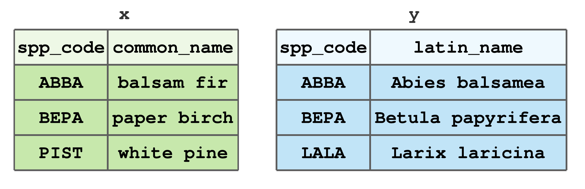
FIGURE 7.13: Stylized tibbles to illustrate dplyr join functions.
If you’d like to follow along with the examples, code to create Figure 7.13 tibbles x and y is given below.
x <- tibble(spp_code = c("ABBA", "BEPA", "PIST"),
common_name = c("balsam fir", "paper birch", "white pine"))
y <- tibble(spp_code = c("ABBA", "BEPA", "LALA"),
latin_name = c("Abies balsamea", "Betula papyrifera",
"Larix laricina"))For all join functions, the first two arguments, x and y respectively, define the tibbles to combine. All joins also return a new tibble with the same type as x. This consistent function input and output facilitates writing efficient piped workflows using all dplyr functions.
In addition to x and y arguments, join functions take an argument by that controls which columns are used to match row values across the two tibbles. If the by argument is not specified, then all columns with names common to x and y are used (this is referred to as a natural join). If you want to use only a subset of common column names, then set by equal to a character vector of those names. For example, using the tibbles in Figure 7.13, to join x and y by spp_code, set by = "spp_code".53 To join by different column names in x and y, use a named vector to match columns. For example, say spp_code in y was named SPP_CODE, then by = c("spp_code" = "SPP_CODE") will match rows in x$spp_code to y$SPP_CODE. After presenting the various mutating and filtering joins below, we’ll work through some applied examples.
7.14.1 Mutating joins
Mutating joins add columns from y to x based on row matching. If a row in x matches multiple rows in y, the multiple matching rows in y will be included in the output.
There are four mutating joins.
left_join()includes all rows inx, regardless of whether they match values iny.54 If a given row inxdoes not have a match iny, anNAvalue is assigned to that row in the new columns. Figure 7.14 illustrates the left join using data from Figure 7.13. Here, and in subsequent examples using these data, we’re joining by thespp_codecolumn. BecausePISTis not inythe resulting tibble has aNAfor the newlatin_namecolumn andPISTrow.
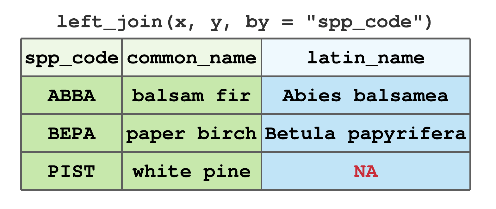
FIGURE 7.14: Left join by spp_code for tibbles in Figure 7.13.
right_join()includes all rows iny. It’s equivalent toleft_join(y, x), but the columns and rows will be ordered differently. Figure 7.15 illustrates the right join using data from Figure 7.13. BecauseLALAis inybut notx, the resulting tibble has anNAfor the newcommon_namecolumn andLALArow.
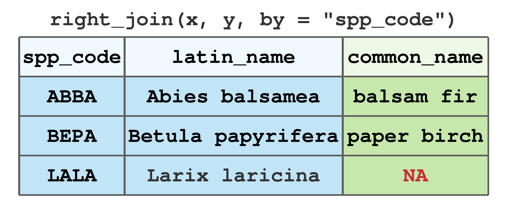
FIGURE 7.15: Right join by spp_code for tibbles in Figure 7.13.
inner_join()includes only rows that match inxandy. For data given in Figure 7.13,ABBAandBEPAare the only commonspp_codevalues inxandy, hence their inner join results in Figure 7.16.
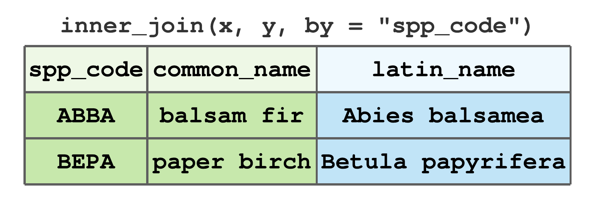
FIGURE 7.16: Inner join by spp_code for tibbles in Figure 7.13.
full_join()includes all rows fromxandy. Figure 7.17 illustrates the full join using data from Figure 7.13, notice rows for all non-matching values receive aNAvalue.
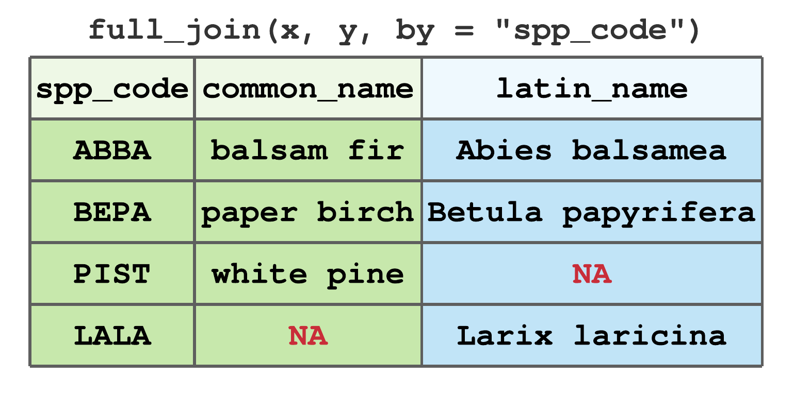
FIGURE 7.17: Full join by spp_code for tibbles in Figure 7.13.
See ?dplyr::`mutate-joins` for more details, optional arguments, and examples.
7.14.2 Filtering joins
Filtering joins filter rows from x based on the presence or absence of row matches in y. Filtering joins match rows in the same way as mutating joins, but the result is a row subset of x (i.e., same columns but, possibly, fewer rows of x).
Filtering joins are used most often to diagnose join mismatches that might cause unwanted or unexpected results when performing mutating joins.
There are two filtering joins.
semi_join()keeps all rows inxthat have a match iny. For data given in Figure 7.13,ABBAandBEPAare the only commonspp_codevalues inxandy, hence their semi join results in Figure 7.18.
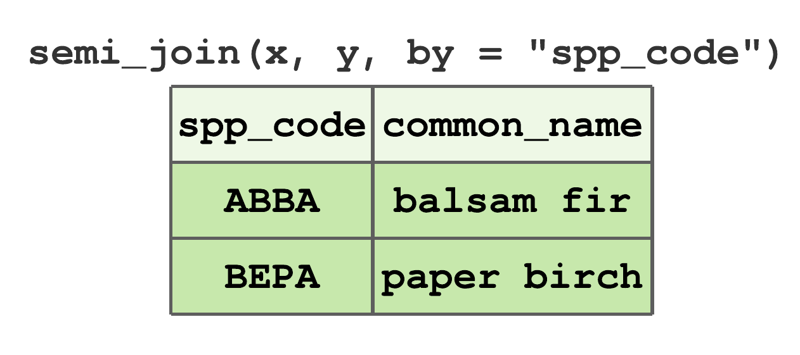
FIGURE 7.18: Semi-join by spp_code for tibbles in Figure 7.13.
anti_join()removes all rows inxthat have a match iny. For data given in Figure 7.13,PISTis the onlyspp_coderow inxthat does not occur iny, hence the anti join result in Figure 7.19.
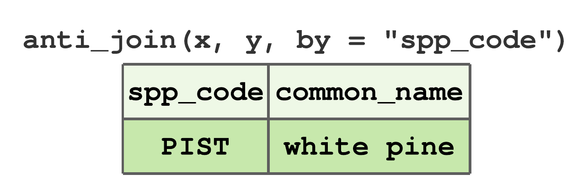
FIGURE 7.19: Anti-join by spp_code for tibbles in Figure 7.13.
See ?dplyr::`filter-joins` for more details, optional arguments, and examples.
7.14.3 Applying allometric equations using joins
Tree measurements for a typical timber cruise include species, DBH, number of logs, and log/stem quality. While height might be measured for a subset of trees, we rarely collect it for all measurement trees. Stem volume is typically an important variable that comes from a timber cruise; however, we don’t measure stem volume directly on a tree. Stem volume and similar quantities such as biomass are computed using allometric equations (Chapter 5). Allometric equations are regression equations that relate measurements like species, DBH, and perhaps height to more difficult and expensive to measure quantities such as stem volume or biomass.
Data to inform these allometric models is expensive to collect because trees must be harvested and meticulously partitioned to facilitate accurate dimension and weight measurements (see, e.g., Section 1.2.1). These efforts result in published allometric equations that take the inexpensive measurements as input (e.g., species and DBH) and return estimates of the expensive quantity (e.g., height, volume, biomass).
In this section we’ll work with species specific height models (e.g., given tree species and DBH, the model returns tree height) and volume models (e.g., given tree species, DBH, and height, the model returns tree volume). It’s not necessary to understand model formulation and estimation for this section.
Let’s begin by looking at a model used by the USDA Forest Service to estimate tree height (ft) given DBH (in) and species. The model, published in FVS (2021) Equation 4.1.2, is
\[\begin{equation}
\text{height} = 4.5 + \exp\left(\beta_1 + \frac{\beta_2}{\left(\text{DBH} + 1.0\right)} \right),
\tag{7.1}
\end{equation}\]
where regression coefficient values for \(\beta_1\) and \(\beta_2\) are provided in Table 4.1.2 of FVS (2021) for trees in the northeastern US. For convenience, we copied the coefficients from FVS (2021) to “datasets/FVS_NE_coefficients.csv”, which is read in below and named ht_coeffs.
#> Rows: 108 Columns: 3
#> ── Column specification ─────────────────────────────────────────────────────────────────────────────────────────────────────────────────────────────────────────────────────────────────────────────────────────────
#> Delimiter: ","
#> chr (1): USFS_FVS_code
#> dbl (2): beta_1, beta_2
#>
#> ℹ Use `spec()` to retrieve the full column specification for this data.
#> ℹ Specify the column types or set `show_col_types = FALSE` to quiet this message.#> Rows: 108
#> Columns: 3
#> $ USFS_FVS_code <chr> "BF", "TA", "WS", "RS", "NS", "…
#> $ beta_1 <dbl> 4.5084, 4.5084, 4.5084, 4.5084,…
#> $ beta_2 <dbl> -6.0116, -6.0116, -6.0116, -6.0…Each row in ht_coeffs holds species specific (USFS_FVS_code) regression coefficient values for \(\beta_1\) (beta_1) and \(\beta_2\) (beta_2) used to implement (7.1). For example, say you have a 10 (in) DBH balsam fir (Abies balsamea) and want to estimate its height (ft). The USFS_FVS_code for balsam fir is BF and associated coefficients are \(\beta_1\) = 4.5084 and \(\beta_2\) = -6.0116. The code below applies (7.1) using the given DBH, \(\beta_1\), and \(\beta_2\) values to produce the desired height estimate.
DBH_in <- 10
beta_1 <- 4.5084
beta_2 <- -6.0116
height_ft <- 4.5 + exp(beta_1 + beta_2/(DBH_in + 1))
height_ft#> [1] 57.057Now, say we want to use (7.1) to estimate the height for all trees measured in some cruise data where only DBH and species were collected. For illustration, we use a version of the two stand plot data introduced later in Section ?? and shown in Figure 12.7. As seen below, these data provide a stand and plot identification value and overstory tree DBH and species codes.
#> Rows: 15 Columns: 4
#> ── Column specification ─────────────────────────────────────────────────────────────────────────────────────────────────────────────────────────────────────────────────────────────────────────────────────────────
#> Delimiter: ","
#> chr (1): scientific_name
#> dbl (3): stand_id, plot_id, DBH_in
#>
#> ℹ Use `spec()` to retrieve the full column specification for this data.
#> ℹ Specify the column types or set `show_col_types = FALSE` to quiet this message.#> Rows: 15
#> Columns: 4
#> $ stand_id <dbl> 1, 1, 1, 1, 1, 2, 2, 2, 2, 2,…
#> $ plot_id <dbl> 1, 1, 1, 3, 3, 1, 1, 1, 2, 2,…
#> $ scientific_name <chr> "Abies balsamea", "Pinus stro…
#> $ DBH_in <dbl> 11.3, 9.8, 10.7, 15.4, 13.1, …We begin by joining coefficient columns in ht_coeffs to stands by species. Once that’s complete, we’ll use mutate() to add a new column height_ft with values defined by (7.1) and column values DBH_in, beta_1, beta_2. There’s one mild technical issue though—notice the USFS_FVS_code in ht_coeffs are two letter species codes and scientific_name in stands are scientific names.55 So before we can join ht_coeffs to stands by species, we need to get a common species identification column. Fortunately, this isn’t the first time we’ve encountered this issue.
Columns in the “datasets/USFS_species_codes.csv” file, read in below, allow crosswalk between species common name, scientific name, and three common USFS code types.56
#> Rows: 108 Columns: 5
#> ── Column specification ─────────────────────────────────────────────────────────────────────────────────────────────────────────────────────────────────────────────────────────────────────────────────────────────
#> Delimiter: ","
#> chr (4): common_name, scientific_name, USFS_FVS_cod...
#> dbl (1): USFS_FIA_code
#>
#> ℹ Use `spec()` to retrieve the full column specification for this data.
#> ℹ Specify the column types or set `show_col_types = FALSE` to quiet this message.#> Rows: 108
#> Columns: 5
#> $ common_name <chr> "balsam fir", "tamarack", "wh…
#> $ scientific_name <chr> "Abies balsamea", "Larix lari…
#> $ USFS_FVS_code <chr> "BF", "TA", "WS", "RS", "NS",…
#> $ USFS_FIA_code <dbl> 12, 71, 94, 97, 91, 95, 90, 1…
#> $ PLANTS_code <chr> "ABBA", "LALA", "PIGL", "PIRU…The USFS_FVS_code column is common to the ht_coeffs and spp_codes tibbles. Also, the scientific_name column is common to the spp_codes and stands tibbles. So, joining the USFS_FVS_code column from spp_codes to stands by scientific_name will let us subsequently join ht_coeffs to stands by USFS_FVS_code. The first step in this sequence of joins is given below.
stands <- left_join(stands, spp_codes, by = "scientific_name")
# Remove the columns we don't need.
stands <- stands %>% select(!c(common_name, USFS_FIA_code, PLANTS_code))
# Check that all species have a scientific_name match.
any(is.na(stands$USFS_FVS_code)) # No NAs mean all matched (that's good)!#> [1] FALSELet’s step through the code above before looking at the resulting stands. left_join() adds columns from spp_codes to stands by matching stands$scientific_name to spp_codes$scientific_name. After the left_join(), all spp_codes columns are added to stands. The call to select() removes unneeded spp_codes columns (i.e., we only need USFS_FVS_code). The final line of code checks that there are no NA values in stands$USFS_FVS_code. This is an important step, because NA presence means not all the species in stands were in spp_codes, which would present a problem as we move forward. Fortunately, no NA values were found, which means all rows in stands now have a valid USFS_FVS_code value. An alternative, and perhaps better, approach to doing this check via any(is.na(stands$USFS_FVS_code)) after doing the left_join() is to do it before the left_join() using an anti_join(). Recall, anti_join() removes all rows in x that have a match in y. So, if the anti_join() below returns a tibble with no rows, we know all species in stands have a match in spp_codes. We’ll use anti joins for join diagnostics in subsequent code.
# Alternative way to check all species had a scientific_name match.
anti_join(stands, spp_codes, by = "scientific_name")#> # A tibble: 0 × 5
#> # ℹ 5 variables: stand_id <dbl>, plot_id <dbl>,
#> # scientific_name <chr>, DBH_in <dbl>,
#> # USFS_FVS_code <chr>Okay, let’s take a look at our work.
#> Rows: 15
#> Columns: 5
#> $ stand_id <dbl> 1, 1, 1, 1, 1, 2, 2, 2, 2, 2,…
#> $ plot_id <dbl> 1, 1, 1, 3, 3, 1, 1, 1, 2, 2,…
#> $ scientific_name <chr> "Abies balsamea", "Pinus stro…
#> $ DBH_in <dbl> 11.3, 9.8, 10.7, 15.4, 13.1, …
#> $ USFS_FVS_code <chr> "BF", "WP", "WP", "PB", "WP",…The output from glimpse() above shows that stands now has the USFS_FVS_code column and, hence, we’re ready to join it with ht_coeffs. However, before proceeding with the left join of stands and hf_coeffs by USFS_FVS_code, we first use an anti join to check that all stands$USFS_FVS_code values are in hf_coeffs$USFS_FVS_code.
# Check that all USFS_FVS_code species in stands are in ht_coeffs.
anti_join(stands, ht_coeffs, by = "USFS_FVS_code")#> # A tibble: 0 × 5
#> # ℹ 5 variables: stand_id <dbl>, plot_id <dbl>,
#> # scientific_name <chr>, DBH_in <dbl>,
#> # USFS_FVS_code <chr>The empty tibble returned by the anti join above tells us that all species in stands have a match in hf_coeffs and we can proceed with the left join to attach the regression coefficients in ht_coeffs to stands.
#> Rows: 15
#> Columns: 7
#> $ stand_id <dbl> 1, 1, 1, 1, 1, 2, 2, 2, 2, 2,…
#> $ plot_id <dbl> 1, 1, 1, 3, 3, 1, 1, 1, 2, 2,…
#> $ scientific_name <chr> "Abies balsamea", "Pinus stro…
#> $ DBH_in <dbl> 11.3, 9.8, 10.7, 15.4, 13.1, …
#> $ USFS_FVS_code <chr> "BF", "WP", "WP", "PB", "WP",…
#> $ beta_1 <dbl> 4.5084, 4.6090, 4.6090, 4.438…
#> $ beta_2 <dbl> -6.0116, -6.1896, -6.1896, -4…The output from glimpse() above shows that beta_1 and beta_2 are now added to stands and we can proceed with adding the new tree height column (height_ft) to stands via mutate().
stands <- stands %>%
mutate(height_ft = 4.5 + exp(beta_1 + beta_2/(DBH_in + 1)))
# Remove the now unnecessary coefficients and
# move USFS_FVS_code to after species.
stands <- stands %>%
select(!c(beta_1, beta_2)) %>%
relocate(USFS_FVS_code, .after = scientific_name)
stands %>%
glimpse()#> Rows: 15
#> Columns: 6
#> $ stand_id <dbl> 1, 1, 1, 1, 1, 2, 2, 2, 2, 2,…
#> $ plot_id <dbl> 1, 1, 1, 3, 3, 1, 1, 1, 2, 2,…
#> $ scientific_name <chr> "Abies balsamea", "Pinus stro…
#> $ USFS_FVS_code <chr> "BF", "WP", "WP", "PB", "WP",…
#> $ DBH_in <dbl> 11.3, 9.8, 10.7, 15.4, 13.1, …
#> $ height_ft <dbl> 60.182, 61.093, 63.644, 70.49…There we go! We now have an estimate of tree height in our stands tibble.
Next, let’s add stem volume estimates to our tree data. We’ll follow the same process as adding height estimates, which starts with finding a suitable allometric model in the literature. Given we have species, DBH (in), and now height (ft), we can look for models that take these variables as input and return volume (m\(^3\)). A suitable model for this setting is given in Honer (1967) and defined as
\[\begin{equation}
\text{volume} = \frac{\text{DBH}^2}{\alpha_1 + \frac{\alpha_2}{\text{height}}}.
\tag{7.2}
\end{equation}\]
We copied species specific regression coefficient values for \(\alpha_1\) and \(\alpha_2\) from Honer (1967) to “datasets/Honer_coefficients.csv”, which is read in below and named vol_coeffs.
#> Rows: 34 Columns: 3
#> ── Column specification ─────────────────────────────────────────────────────────────────────────────────────────────────────────────────────────────────────────────────────────────────────────────────────────────
#> Delimiter: ","
#> chr (1): USFS_FVS_code
#> dbl (2): alpha_1, alpha_2
#>
#> ℹ Use `spec()` to retrieve the full column specification for this data.
#> ℹ Specify the column types or set `show_col_types = FALSE` to quiet this message.#> Rows: 34
#> Columns: 3
#> $ USFS_FVS_code <chr> "WP", "RP", "JP", "LP", "BS", "…
#> $ alpha_1 <dbl> 0.691, 0.710, 0.897, 0.694, 1.5…
#> $ alpha_2 <dbl> 363.68, 355.62, 348.53, 343.90,…Columns USFS_FVS_code, alpha_1, and alpha_2, in vol_coeffs hold values for species, \(\alpha_1\), and \(\alpha_2\), respectively.
Because stands and vol_coeffs use the same species codes (i.e., USFS_FVS_code) we can continue directly with checking that all species in stands are present in vol_coeffs via the anti join below.
#> # A tibble: 0 × 6
#> # ℹ 6 variables: stand_id <dbl>, plot_id <dbl>,
#> # scientific_name <chr>, USFS_FVS_code <chr>,
#> # DBH_in <dbl>, height_ft <dbl>The empty anti join tibble above confirms all species are present and we can proceed with the left join, compute tree volumes using (7.2) within mutate(), remove subsequently unneeded coefficient columns, and take a look at our new tree and species specific volume_ft3 column.
stands <- left_join(stands, vol_coeffs, by = "USFS_FVS_code")
stands <- stands %>%
mutate(volume_ft3 = DBH_in^2/(alpha_1 + alpha_2/height_ft))
# Remove the now unnecessary coefficients.
stands <- stands %>%
select(!c(alpha_1, alpha_2))
stands %>%
glimpse()#> Rows: 15
#> Columns: 7
#> $ stand_id <dbl> 1, 1, 1, 1, 1, 2, 2, 2, 2, 2,…
#> $ plot_id <dbl> 1, 1, 1, 3, 3, 1, 1, 1, 2, 2,…
#> $ scientific_name <chr> "Abies balsamea", "Pinus stro…
#> $ USFS_FVS_code <chr> "BF", "WP", "WP", "PB", "WP",…
#> $ DBH_in <dbl> 11.3, 9.8, 10.7, 15.4, 13.1, …
#> $ height_ft <dbl> 60.182, 61.093, 63.644, 70.49…
#> $ volume_ft3 <dbl> 17.8147, 14.4556, 17.8745, 36…As mentioned previously, applying allometric equations to estimate tree characteristics is a common task, and one greatly simplified using a dplyr join and verb function workflow.
7.14.4 Set operations
We often want to manipulate rows in two tibbles that have the same columns. For example, we might want to identify rows with identical values in two tibbles. Or perhaps combine two tibbles, but keep only one instance of duplicate rows. While such tasks could be accomplished using joins, dplyr provides functions that treat rows like sets (i.e., in the mathematical sense). Like joins, these functions accept two tibbles, x and y, and provide the following set operations.
intersect(x, y): return unique rows common toxandy.setdiff(x, y): return unique rows inxthat are not iny.union(x, y): return unique rows inxory.union_all(x, y): return all rows (even duplicates) inxory.
Let’s try these functions out using the following example tibbles. Notice rows one and two in x are duplicate (i.e., their tree id and value are the same). Also, the fourth row of x is the same as the first row of y.
x <- tibble(id = c(1, 1, 2, 3), value = c("a", "a", "b", "c"))
y <- tibble(id = 3:5, value = c("c", "d", "e"))The result from intersect() identifies both x and y have a row with id = 3 and value = "c" in common.
#> # A tibble: 1 × 2
#> id value
#> <dbl> <chr>
#> 1 3 cThe call to setdiff() shows the two unique rows in x that are not in y. Because set functions, with the exception of union_all(), return unique instances of rows, only one instance of x’s id = 1 and value = "a" row is returned.
#> # A tibble: 2 × 2
#> id value
#> <dbl> <chr>
#> 1 1 a
#> 2 2 bThe result of union() is all rows in x and y, except the duplicates for rows with id = 1, value = "a" and id = 2, value = "c".
#> # A tibble: 5 × 2
#> id value
#> <dbl> <chr>
#> 1 1 a
#> 2 2 b
#> 3 3 c
#> 4 4 d
#> 5 5 eFinally, union_all() is identical to union(), but its result includes the duplicates.
#> # A tibble: 7 × 2
#> id value
#> <dbl> <chr>
#> 1 1 a
#> 2 1 a
#> 3 2 b
#> 4 3 c
#> 5 3 c
#> 6 4 d
#> 7 5 e7.14.5 Row and column binds
Aside from joins and set operations that follow row matching rules, we frequently want simply to bind together two or more tibbles either by rows or columns. These operations are done using the dplyr bind_rows() and bind_cols() functions. Both functions take two or more tibbles to bind as separate arguments (or in a single list). The bind_rows() function has an optional argument .id that, if specified, will add a new column with values that link each row to the original tibbles. See ?dplyr::bind for additional details about both functions.
We’ll illustrate the bind functions using the trees tibble created in Section 6.2, which recall looks like the following.
#> # A tibble: 5 × 4
#> id year dbh height
#> <int> <int> <dbl> <dbl>
#> 1 1 2020 1.9 23
#> 2 1 2021 2.1 24.9
#> 3 2 2020 5.2 47
#> 4 2 2021 5.5 48.5
#> 5 3 2021 0.5 8.8Say we collected core data for a few more trees and recorded it in the more_trees tibble below.
We can combine trees and more_trees into a single tibble as shown below.
#> # A tibble: 8 × 4
#> id year dbh height
#> <dbl> <dbl> <dbl> <dbl>
#> 1 1 2020 1.9 23
#> 2 1 2021 2.1 24.9
#> 3 2 2020 5.2 47
#> 4 2 2021 5.5 48.5
#> 5 3 2021 0.5 8.8
#> 6 4 2020 10.2 NA
#> 7 4 2021 10.8 NA
#> 8 5 2020 14 NAThe .id argument is added below, so we can keep track of the original tibbles.
#> # A tibble: 8 × 5
#> coring_effort id year dbh height
#> <chr> <dbl> <dbl> <dbl> <dbl>
#> 1 1 1 2020 1.9 23
#> 2 1 1 2021 2.1 24.9
#> 3 1 2 2020 5.2 47
#> 4 1 2 2021 5.5 48.5
#> 5 1 3 2021 0.5 8.8
#> 6 2 4 2020 10.2 NA
#> 7 2 4 2021 10.8 NA
#> 8 2 5 2020 14 NASay we also have species for more_trees. This information could be added when more_trees was formed, or afterwards using bind_cols() as follows.
species <- tibble(species = c("QURU", "QURU", "PIST"))
more_trees <- bind_cols(more_trees, species)
more_trees#> # A tibble: 3 × 4
#> id year dbh species
#> <dbl> <dbl> <dbl> <chr>
#> 1 4 2020 10.2 QURU
#> 2 4 2021 10.8 QURU
#> 3 5 2020 14 PISTIf column names don’t match, then bind_rows() fills in missing values with NA. For example, the species column does not exist in trees but does in more_trees, hence the result below.
#> # A tibble: 8 × 6
#> core_effort id year dbh height species
#> <chr> <dbl> <dbl> <dbl> <dbl> <chr>
#> 1 1 1 2020 1.9 23 <NA>
#> 2 1 1 2021 2.1 24.9 <NA>
#> 3 1 2 2020 5.2 47 <NA>
#> 4 1 2 2021 5.5 48.5 <NA>
#> 5 1 3 2021 0.5 8.8 <NA>
#> 6 2 4 2020 10.2 NA QURU
#> 7 2 4 2021 10.8 NA QURU
#> 8 2 5 2020 14 NA PIST7.15 Summary
Sections 7.1 through 7.8 covered core dplyr verb functions used to manipulate and summarize data held in a single tibble. To accommodate nested data structures, we introduced the grouped tibble in Section 7.9 along with functions to add, change, and remove groupings. Here too, we demonstrated how verb functions behave differently given a grouped tibble. In particular, we noted the grouped summarize() is a key tool used to solve many estimation problems we’ll cover in subsequent chapters.
Section 7.10 highlighted two counting functions n() and n_distinct(). When applied to grouped data, these counting functions are particularly useful for computing group-specific number of observations and enumerating unique value occurrences within one or more categorical variables (e.g., computing diversity metrics such as species richness).
across() was introduced in Section 7.11 as a tool to simplify code in cases when one or more functions are applied to multiple variables. We emphasized the pipe operator (%>%) in Section 7.12 for writing efficient and easy to read workflows.
Sections 7.13 served as a capstone—bringing together the preceding concepts and functions into workflows to explore the Minnesota tree growth datasets introduced in Sections 6.1.
Sections 7.14 turns to functions for combining two tibbles. Mutating joins, introduced in Section 7.14.1, use matching rows to add columns from the second tibble to the first tibble. Filtering joins, introduced in Section 7.14.2, subset rows in the first tibble given matching rows in the second tibble. Filtering joins are typically used to diagnose row mismatch issues prior to performing mutating joins. In Section 7.14.3, we stepped through a process to estimate tree height and volume using species-specific allometric equations. The process involved a series of filtering and mutating joins that created a single tibble that included all the columns needed to create the desired height and volume columns via calls to mutate().
A suite of set operations were reviewed in Section 7.14.4. These functions operate on tibbles with the same columns, and are used most often to identify unique or common rows between tibbles, or to combine tibbles while removing duplicate rows. Finally, Section 7.14.5 introduced the bind_rows() and bind_cols() functions used to augment tibble rows and columns, respectively.
7.16 Exercises
Figure 7.20 provides timber cruise data collected over three inventory plots and recorded in a field notebook. Rows in the notebook correspond to measurement trees and columns are defined as follows.
Plotplot number on which the tree was measured.Sppspecies code.DBHDBH in centimeters.Httotal tree height in meters.Statuslive (L) or dead (D).
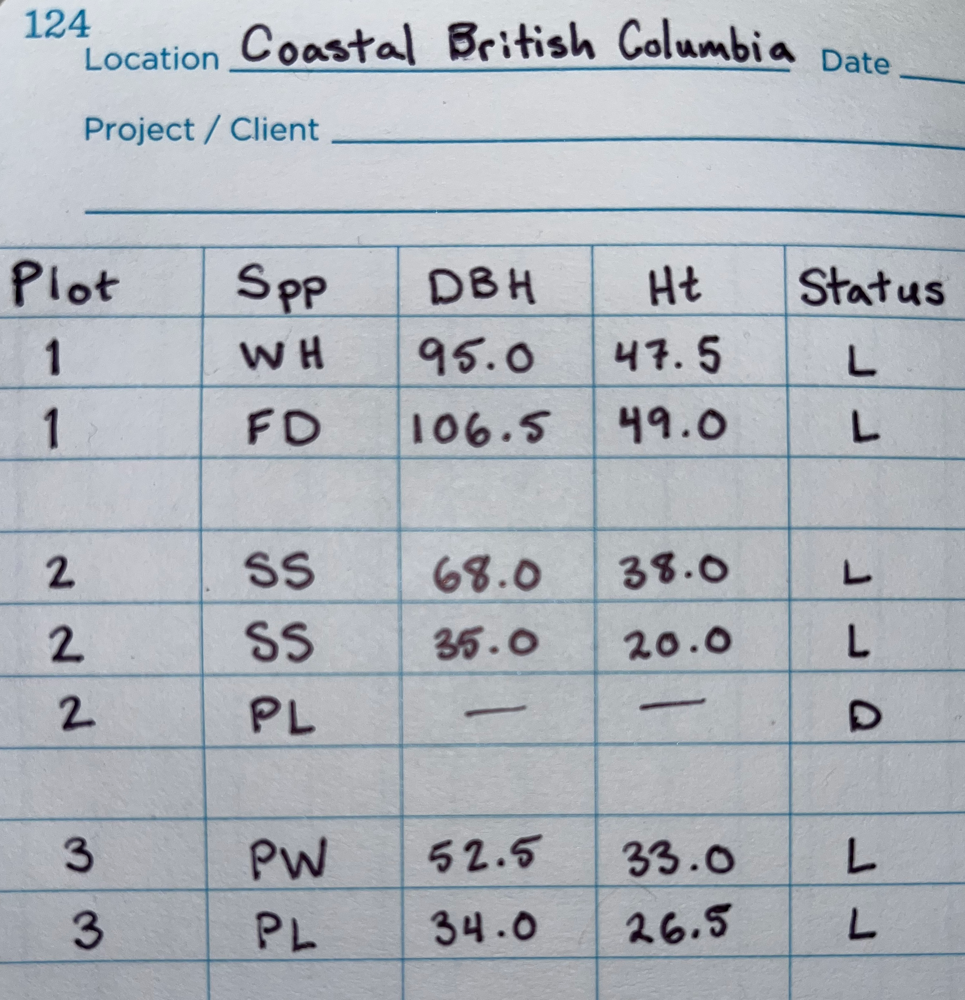
FIGURE 7.20: Example timber cruise data collected over three inventory plots and used for dplyr exercises.
Data provided in Figure 7.20 are used for Exercises 7.1 through 7.24. For most exercises, we provide the desired output and it’s your job to write the dplyr code to reproduce the output. Use the pipe operator when possible.
Exercise 7.1 Create a tibble called plots that holds the cruise data provided in Figure 7.20. To do this, copy the data into a text file (e.g., separate columns using comma, space, or tab delimiters) or enter it into a spreadsheet then export it as a text file with approprite column delimiters. Then read the file into R using a readr function, see Section 6.3. Once complete, your plots tibble should match the output below. Hint, to get your column data types to match those shown below, use the col_types argument in your chosen readr read function.
#> # A tibble: 7 × 5
#> Plot Spp DBH Ht Status
#> <int> <chr> <dbl> <dbl> <chr>
#> 1 1 WH 95 47.5 L
#> 2 1 FD 106. 49 L
#> 3 2 SS 68 38 L
#> 4 2 SS 35 20 L
#> 5 2 PL NA NA D
#> 6 3 PW 52.5 33 L
#> 7 3 PL 34 26.5 LExercise 7.2 Given your output from Exercise 7.1 answer the following questions about plots (place your answer to each question behind a comment in your code).
- How many rows and columns?
- What are the column names?
- What is the data type of each column?
- Are there any
NAvalues? If so, in which columns and which rows?
Exercise 7.3 Print rows with only dead trees.
#> # A tibble: 1 × 5
#> Plot Spp DBH Ht Status
#> <int> <chr> <dbl> <dbl> <chr>
#> 1 2 PL NA NA DExercise 7.4 Print rows with trees that do not have NA for DBH.
#> # A tibble: 6 × 5
#> Plot Spp DBH Ht Status
#> <int> <chr> <dbl> <dbl> <chr>
#> 1 1 WH 95 47.5 L
#> 2 1 FD 106. 49 L
#> 3 2 SS 68 38 L
#> 4 2 SS 35 20 L
#> 5 3 PW 52.5 33 L
#> 6 3 PL 34 26.5 LExercise 7.5 Print the row with the largest DBH.
#> # A tibble: 1 × 5
#> Plot Spp DBH Ht Status
#> <int> <chr> <dbl> <dbl> <chr>
#> 1 1 FD 106. 49 LExercise 7.6 Print rows with species code “SS” and DBH greater than or equal to 40 cm.
#> # A tibble: 1 × 5
#> Plot Spp DBH Ht Status
#> <int> <chr> <dbl> <dbl> <chr>
#> 1 2 SS 68 38 LExercise 7.7 Print rows that: 1) do not have species code “SS”; 2) are live; 3) have DBH greater than 50 cm.
#> # A tibble: 3 × 5
#> Plot Spp DBH Ht Status
#> <int> <chr> <dbl> <dbl> <chr>
#> 1 1 WH 95 47.5 L
#> 2 1 FD 106. 49 L
#> 3 3 PW 52.5 33 LExercise 7.8 Change column names DBH and Ht to DBH_cm and Ht_m. Be sure to assign your result back to plots to make the change perminant.
#> # A tibble: 7 × 5
#> Plot Spp DBH_cm Ht_m Status
#> <int> <chr> <dbl> <dbl> <chr>
#> 1 1 WH 95 47.5 L
#> 2 1 FD 106. 49 L
#> 3 2 SS 68 38 L
#> 4 2 SS 35 20 L
#> 5 2 PL NA NA D
#> 6 3 PW 52.5 33 L
#> 7 3 PL 34 26.5 LExercise 7.9 Use mutate() to add a new column called BA_m2 that holds each tree’s basal area in square meters. Place this new column to the right of DBH_cm. Given DBH in centimeters, basal area in square meters is
\[\begin{equation}
\frac{\pi}{10000}\cdot\left(\frac{\text{DBH}}{2}\right)^2.
\end{equation}\]
Your new plots tibble should look like the following.
#> # A tibble: 7 × 6
#> Plot Spp DBH_cm BA_m2 Ht_m Status
#> <int> <chr> <dbl> <dbl> <dbl> <chr>
#> 1 1 WH 95 49.2 47.5 L
#> 2 1 FD 106. 61.9 49 L
#> 3 2 SS 68 25.2 38 L
#> 4 2 SS 35 6.68 20 L
#> 5 2 PL NA NA NA D
#> 6 3 PW 52.5 15.0 33 L
#> 7 3 PL 34 6.31 26.5 LExercise 7.10 Use the mutate() function to add a new column called Live. Values in Live should be TRUE when Status equals L and FALSE when Status equals D. Hint, consider using the if_else() or case_when() function within mutate() as described in Section 7.6.
#> # A tibble: 7 × 7
#> Plot Spp DBH_cm BA_m2 Ht_m Status Live
#> <int> <chr> <dbl> <dbl> <dbl> <chr> <lgl>
#> 1 1 WH 95 49.2 47.5 L TRUE
#> 2 1 FD 106. 61.9 49 L TRUE
#> 3 2 SS 68 25.2 38 L TRUE
#> 4 2 SS 35 6.68 20 L TRUE
#> 5 2 PL NA NA NA D FALSE
#> 6 3 PW 52.5 15.0 33 L TRUE
#> 7 3 PL 34 6.31 26.5 L TRUEExercise 7.11 Use the select() function to remove the Status column.
#> # A tibble: 7 × 6
#> Plot Spp DBH_cm BA_m2 Ht_m Live
#> <int> <chr> <dbl> <dbl> <dbl> <lgl>
#> 1 1 WH 95 49.2 47.5 TRUE
#> 2 1 FD 106. 61.9 49 TRUE
#> 3 2 SS 68 25.2 38 TRUE
#> 4 2 SS 35 6.68 20 TRUE
#> 5 2 PL NA NA NA FALSE
#> 6 3 PW 52.5 15.0 33 TRUE
#> 7 3 PL 34 6.31 26.5 TRUEExercise 7.12 How many trees (i.e., rows) in each plot? Call your count variable n_trees. Hint, use group_by() in your piped dplyr expression.
#> # A tibble: 3 × 2
#> Plot n_trees
#> <int> <int>
#> 1 1 2
#> 2 2 3
#> 3 3 2Exercise 7.13 How many distinct species across all plots? Call your count variable n_spp.
#> # A tibble: 1 × 1
#> n_spp
#> <int>
#> 1 5Exercise 7.14 How many distinct species within each plot? Call your count variable n_spp.
#> # A tibble: 3 × 2
#> Plot n_spp
#> <int> <int>
#> 1 1 2
#> 2 2 2
#> 3 3 2Exercise 7.15 What are the distinct species codes across all plots?
#> # A tibble: 5 × 1
#> Spp
#> <chr>
#> 1 WH
#> 2 FD
#> 3 SS
#> 4 PL
#> 5 PWExercise 7.16 What are the distinct species codes within each plot?
#> # A tibble: 6 × 2
#> # Groups: Plot [3]
#> Plot Spp
#> <int> <chr>
#> 1 1 WH
#> 2 1 FD
#> 3 2 SS
#> 4 2 PL
#> 5 3 PW
#> 6 3 PLExercise 7.17 Print rows with the largest DBH on each plot.
#> # A tibble: 3 × 6
#> # Groups: Plot [3]
#> Plot Spp DBH_cm BA_m2 Ht_m Live
#> <int> <chr> <dbl> <dbl> <dbl> <lgl>
#> 1 1 FD 106. 61.9 49 TRUE
#> 2 2 SS 68 25.2 38 TRUE
#> 3 3 PW 52.5 15.0 33 TRUEExercise 7.18 What is the total BA on each plot? Call this total total_BA_m2. Hint, use group_by() in your piped dplyr expression that also involves calling the sum() function in summarize().
#> # A tibble: 3 × 2
#> Plot total_BA_m2
#> <int> <dbl>
#> 1 1 111.
#> 2 2 31.9
#> 3 3 21.3Exercise 7.19 What is the total BA on each plot and by species? Call this total total_BA_m2. Hint, this should require modification of your 7.18 code’s group_by() function and consultation with Section 7.13.1.
#> `summarise()` has grouped output by 'Plot'. You can
#> override using the `.groups` argument.#> # A tibble: 6 × 3
#> # Groups: Plot [3]
#> Plot Spp total_BA_m2
#> <int> <chr> <dbl>
#> 1 1 FD 61.9
#> 2 1 WH 49.2
#> 3 2 PL 0
#> 4 2 SS 31.9
#> 5 3 PL 6.31
#> 6 3 PW 15.0Exercise 7.20 Next, let’s add stem volume estimates using the tree measurements. These data were collected in costal British Columbia, Canada. Given we have species, DBH (cm), and total height (m), we can look for models that take these variables as input and return volume (ft\(^3\)). A suitable model for this setting is defined as \[\begin{equation} \text{volume} = \exp(\beta_0) + \text{DBH}^{\beta_1} + \text{Ht}^{b_2}, \tag{7.3} \end{equation}\] where \(\beta_0\), \(\beta_1\), and \(\beta_2\) regression coefficient estimates for merchantable volume are provided in Table 6 of Nigh (2016). For convenience, we copied these coefficients from Nigh (2016) to “datasets/Nigh_coefficients.csv”.
Add a new column to plots called vol_ft3 that holds merchantable volume for each tree and do some clean up when you’re done. Write the code to replicate the following steps.
- Make a coefficients tibble by reading in the species specific regression coefficients held in “Nigh_coefficients.csv”. Hint, open “Nigh_coefficients.csv” in a text editor to see what it contains and how the columns are delimited.
- Add these regression coefficients as new columns to
plotsvia a join byplotscolumnSppand coefficients tibblespecies_code. - Specify (7.3) within
mutate()to add the desiredvol_ft3column. Placevol_ft3to the right ofHt_m. - Remove extraneous columns from
plots(i.e., removecommon_name,scientific_name,species_code,beta_0,beta_1,beta_2).
Your resulting plots should look like the following.
#> # A tibble: 7 × 7
#> Plot Spp DBH_cm BA_m2 Ht_m vol_ft3 Live
#> <int> <chr> <dbl> <dbl> <dbl> <dbl> <lgl>
#> 1 1 WH 95 49.2 47.5 4092. TRUE
#> 2 1 FD 106. 61.9 49 2959. TRUE
#> 3 2 SS 68 25.2 38 1996. TRUE
#> 4 2 SS 35 6.68 20 617. TRUE
#> 5 2 PL NA NA NA NA FALSE
#> 6 3 PW 52.5 15.0 33 1718. TRUE
#> 7 3 PL 34 6.31 26.5 779. TRUEExercise 7.21 What is the total vol_ft3 for each plot? Call your summarized variable vol_ft3_per_plot.
#> # A tibble: 3 × 2
#> Plot vol_ft3_per_plot
#> <int> <dbl>
#> 1 1 7051.
#> 2 2 2613.
#> 3 3 2497.Exercise 7.22 The area of each plot on which trees were measured is 0.04 ha. So your result from Exercise ?? represents tree volume on each plot per 0.04 ha. Scale your result from Exercise ?? to represent tree volume on each plot per ha. Call your summarized variable vol_ft3_per_ha. Hint, use the area expansion factor, introduced in Section XX, within your Exercise ?? code.
#> # A tibble: 3 × 2
#> Plot vol_ft3_per_ha
#> <int> <dbl>
#> 1 1 176267.
#> 2 2 65319.
#> 3 3 62416.Exercise 7.23 What is the mean value across the three plots’ vol_ft3_per_ha computed in Exercise 7.22? Call your summarized variable mean_vol_ft3_per_ha. Hint, pipe the result of your Exercise 7.22 into another summarize(). As noted briefly in Section XX and covered in greater detail in Section XX, this mean is our best estimate for the forest population volume per ha—assuming the distribution of volume on the three plots represent well the distribution of volume in the population.
#> # A tibble: 1 × 1
#> mean_vol_ft3_per_ha
#> <dbl>
#> 1 101334.Exercise 7.24 Say the total forest area was 25 ha. Modify your code from Exercise 7.23 to compute the total forest volume, in addition to mean_vol_ft3_per_ha. Call your resulting total forest volume variable tot_vol_ft3. Hint, compute these two desired quantities within a single call to summarize().
#> # A tibble: 1 × 2
#> mean_vol_ft3_per_ha tot_vol_ft3
#> <dbl> <dbl>
#> 1 101334. 2533344.References
Notice only the first 10 of 3,020 rows were printed. This is because
mn_treesis a tibble and hence the output offilter()is a tibble and has the nice print behavior described in Section 6.2.↩︎You can also use
mutate()andtransmute()to rename columns, e.g., in Figure 7.7 you may replaceidandtreewithTree_id = idandYear = year.↩︎While briefly noted in Section 4.4, there are different
NAtypes. The defaultNAtype is logical, runtypeof(NA), the other types areNA_integer_,NA_real_,NA_complex_, andNA_character_, see?base::NA. Becauseif_else()is strict, if you want one of your arguments to beNAthen it’ll need to match the other argument’s type, e.g., useNA_character_in example code above. Or useifelse()which is happy to coerce to match types for you.↩︎The columns relocated to the tibble’s right side are listed in the last few lines of the printed output because they don’t fit on the page.↩︎
This same group information is provided by
glimpse().↩︎Rounded to three digits.↩︎
In the output of this code, you might be surprised to see the DBH of 0.5 for tree
id3 is rounded to zero, especially since the DBH of 5.5 for treeid2 is rounded to 6. R’sround()function, like other languages that follow the IEC 60559 standard (IEEE 2008), rounds values involving .5 to the next even number, e.g., tryround(1.5)andround(2.5), see?base::roundfor an explanation. To apply the more conventional rounding rule, see thejanitorpackage’sround_half_up()function orround2()function defined at https://stackoverflow.com/a/12688836.↩︎The
purrrpackage provides a complete and consistent set of tools for working with functions and vectors. While we don’t coverpurrrin this book, we strongly encourage you to check it out after working through thetidyversechapters.↩︎In 2023, a new pipe operator
|>was introduced in base R 4.1.0. The two pipe operators are very similar. We prefer the%>%operator and will use this throughout the remainder of the book. See https://www.tidyverse.org/blog/2023/04/base-vs-magrittr-pipe/ for a simple description of the differences between the two pipes.↩︎While the categorical
speciesvariable does not change over time like the quantitative variables, its values can still be represented using \(y\) and subsequent subscript notation.↩︎It’s important to know if and how a tibble is grouped because it can change the behavior of
dplyrverbs as described in Section 7.9.↩︎In this case we don’t really care if the output tibble is grouped or ungrouped, we removed the grouping simply to illustration
.groupsuse.↩︎Recall, each call to summarize removes the right most grouping variable specified in
group_by(). Although it’s redundant, you could addgroup_by(stand_id)after the firstsummarize().↩︎With cold hands and water dripping off your nose, it’s easier to scribble PSME than Pseudotsuga menziesii on your Rite in the Rain tally sheet.↩︎
Notice a natural join of
xandyin this example would also join only byspp_codebecause it’s the only column name common to both tibbles.↩︎This join is used most commonly in practice because we’re typically interested in keeping all rows in
xand adding columns fromy.↩︎We’re adding this extra wrinkle because it’s such a common issue and provides good practice at using joins.↩︎
Species codes held in the
USFS_FVS_codeandUSFS_FIA_codecolumns are used by FVS (2021) and Burrill et al. (2018), respectively. Codes in thePLANTS_codecolumn are from the PLANTS database (USDA 2021), which provides standardized information about the vascular plants, mosses, liverworts, hornworts, and lichens of the US and its territories.↩︎